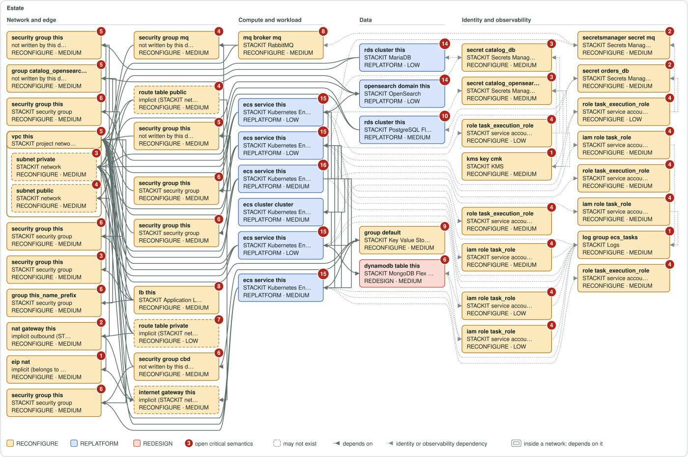
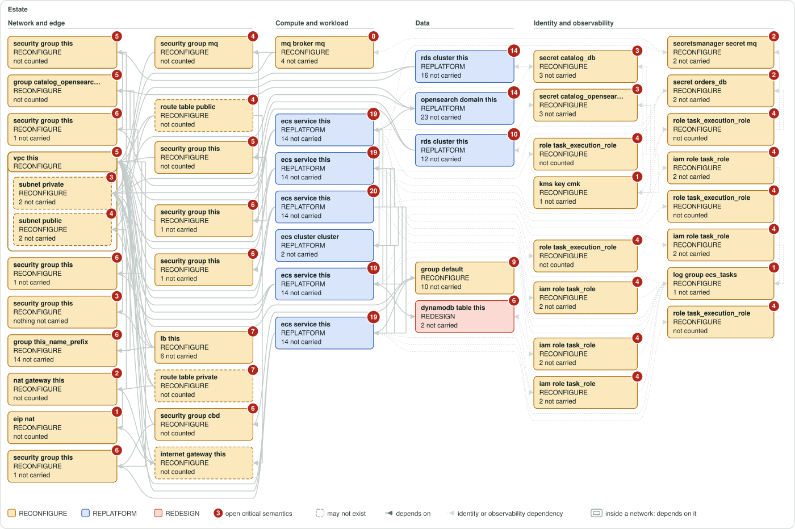
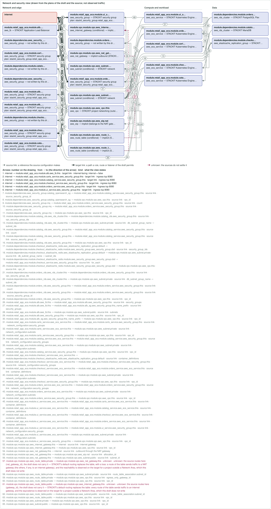
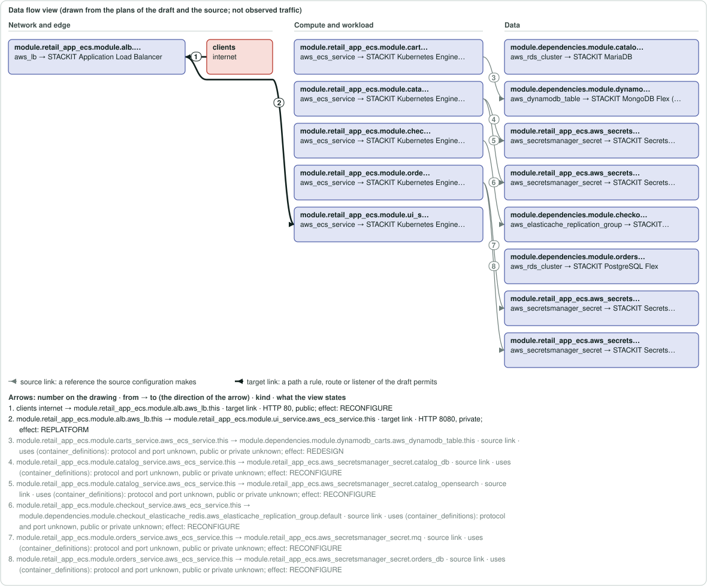

Architecture
The units of the estate and what the assessment decided for each. Class and confidence are the assessment's technical vocabulary. A unit whose evidence coverage is not traced is not a unit with nothing open: the work that is open on it is not measured here. The open work counts are never an input of the unit's class, confidence or eligibility.
Architecture drawings
Each box is a unit and each arrow a dependency, drawn from the same units and dependencies as architecture/dependencies.mmd (the file for Mermaid), with no script and nothing loaded. A scope with more than 120 units is not drawn, because a drawing of part of it would read as all of it; architecture/dependencies.mmd holds the whole graph. The drawings state what the assessment states and decide nothing.
49 units and 109 dependencies in this scope.
Source
Each box is a unit: its short name, its source type and the module call it sits in; an arrow runs from a unit to a unit it depends on, and a subnet is drawn inside the network box it depends on. The columns run from the network and edge units on the left to compute, data, and identity and observability on the right.
Source mapping view
The same source units in the same places, each relabelled with the STACKIT service the assessment proposes for it, with the class and confidence of its decision (the colour is the class; a grey box has no target). It maps the source, not the target: one unit can become several resources of the draft, none, or part of one, and the arrows are the dependencies of the source. The generated target design draws the resources of the draft. A proposal; an architect decides.

What changes
The same units in the same places, with only what the move changes: the class, whether the unit has a target at all, and how many of its properties the draft names as not carried (not counted: the unit's properties were not accounted). A faded box is a direct unit with a target and nothing not carried.

Generated target design
The source mapping view above relabels the source units. This drawing is made from the draft: each box is a resource the draft writes (a network, a network interface, a public IP, a routing table, a DNS zone, a load balancer, a server or a data store), inside the network the draft places it in, with the source units it is written from; an arrow is a reference the draft writes, directly or through a volume, interface or public IP attachment. A dashed arrow is a link the draft does not settle (one the source states, or two resources only another block of the draft names): unknown, listed below with what the source states, never a guess. Security groups, identities and the other resources of the draft are not drawn here (the line below the drawing counts them by type) (architecture/network-security.mmd and architecture/identity.mmd draw them, terraform/ holds them all).
Summary graph: 9 of 53 draft blocks drawn. The drawing is a summary, not the draft: the full list of the draft's blocks, each with the source units it comes from, is engineering/evidence-index.json, and terraform/ holds every block itself.
9 resources of the draft, written from 14 source units; 8 links, 4 of them unknown. By kind: network 2 · load-balancer 1 · server 1 · data-store 5.
Not drawn: 10 stackit_authorization_project_role_assignment, 1 stackit_kms_key, 1 stackit_kms_keyring, 1 stackit_logs_instance, 1 stackit_mariadb_credential, 1 stackit_opensearch_credential, 1 stackit_postgresflex_database, 1 stackit_postgresflex_user, 1 stackit_rabbitmq_credential, 1 stackit_rabbitmq_instance, 1 stackit_secretsmanager_instance, 1 stackit_secretsmanager_user, 7 stackit_security_group, 5 stackit_security_group_rule, 10 stackit_service_account, 1 stackit_valkey_credential (terraform/ holds them).
Links the draft does not settle
stackit_opensearch_instance.dependencies_catalog_opensearch_this→stackit_network.vpc_vpc_private: unknown. module.dependencies.module.catalog_opensearch.aws_opensearch_domain.this refers to module.vpc.module.vpc.aws_subnet.private (vpc_options, vpc_options.subnet_ids) in the source; the draft writes no reference between stackit_opensearch_instance.dependencies_catalog_opensearch_this and stackit_network.vpc_vpc_private; what decides it: stackit_opensearch_instance has no network attribute (provider schema 0.120.0); parameters.sgw_acl is its access control, so it cannot be placed in stackit_network.vpc_vpc_private and who reaches it is decided by var.catalog_opensearch_allowed_cidrs, which stands for the egress addresses of stackit_ske_cluster.retail_app_ecs_cluster by default (decision DEC-GEN-CONVERT-EXPOSURE-WIDENED/module.dependencies.module.catalog_opensearch.aws_opensearch_domain.this).stackit_ske_cluster.retail_app_ecs_cluster→stackit_mongodbflex_instance.dynamodb_tables: unknown. module.retail_app_ecs.module.carts_service.aws_ecs_service.this refers to module.dependencies.module.dynamodb_carts.aws_dynamodb_table.this (container_definitions) in the source; the draft writes no reference between stackit_ske_cluster.retail_app_ecs_cluster and stackit_mongodbflex_instance.dynamodb_tables; what decides it: stackit_mongodbflex_instance has no network attribute (provider schema 0.120.0); acl is its access control, so who reaches it is decided by var.dynamodb_tables_allowed_cidrs, which the draft leaves without a default, which is to name the addresses the workload connects from: the pods of a drafted cluster connect from its egress_address_ranges (a computed attribute: "The outgoing network ranges (in CIDR notation) of traffic originating from workload on the cluster.", provider schema 0.120.0).stackit_ske_cluster.retail_app_ecs_cluster→stackit_network.vpc_vpc_private: unknown. module.retail_app_ecs.module.carts_service.aws_ecs_service.this refers to module.vpc.module.vpc.aws_subnet.private (network_configuration.subnets) in the source; the draft writes no reference between stackit_ske_cluster.retail_app_ecs_cluster and stackit_network.vpc_vpc_private; what decides it: stackit_ske_cluster takes network.id ("ID of the STACKIT Network Area (SNA) network into which the cluster will be deployed", provider schema 0.120.0) and no other placement; the draft sets none: in a project outside a Network Area SKE creates the cluster's own network, in a project in a Network Area an SNA network must be selected (docs.stackit.cloud, Kubernetes Engine, Networking), so the target project decides (decision DEC-GEN-CONVERT-WORKLOAD-PLACEMENT).stackit_ske_cluster.retail_app_ecs_cluster→stackit_valkey_instance.dependencies_checkout_elasticache_redis_default: unknown. module.retail_app_ecs.module.checkout_service.aws_ecs_service.this refers to module.dependencies.module.checkout_elasticache_redis.aws_elasticache_replication_group.default (container_definitions) in the source; the draft writes no reference between stackit_ske_cluster.retail_app_ecs_cluster and stackit_valkey_instance.dependencies_checkout_elasticache_redis_default; what decides it: stackit_valkey_instance has no network attribute (provider schema 0.120.0); parameters.sgw_acl is its access control, so who reaches it is decided by var.elasticache_redis_allowed_cidrs, which the draft leaves without a default, which is to name the addresses the workload connects from: the pods of a drafted cluster connect from its egress_address_ranges (a computed attribute: "The outgoing network ranges (in CIDR notation) of traffic originating from workload on the cluster.", provider schema 0.120.0) (decision DEC-GEN-CONVERT-EXPOSURE-WIDENED/module.dependencies.module.checkout_elasticache_redis.aws_elasticache_replication_group.default).
Where the settings of the load balancers come from
Each setting the draft writes on a load balancer names the source resource and attribute it is written from; a setting written from several source resources has a row for each. 10 rows are traced to a source attribute; 7 are not proven in the source, each on its own: the draft writes the setting and says why the source does not prove where it comes from, and nothing else of the migration waits for it.
| Block of the draft | Setting | Where it comes from |
|---|---|---|
stackit_application_load_balancer.retail_app_ecs_alb_this | disable_target_security_group_assignment | not proven in the source (SOURCE_UNPROVEN): no source setting: the draft's targets are the nodes of a cluster it does not deploy into the network of the load balancer, and STACKIT documents this flag for targets outside the network |
stackit_application_load_balancer.retail_app_ecs_alb_this | listeners[listener-1].http.hosts[*].rules[*].target_pool (default route) | from module.retail_app_ecs.module.alb.aws_lb_listener.frontend_http_tcp.default_action |
stackit_application_load_balancer.retail_app_ecs_alb_this | listeners[listener-1].port | from module.retail_app_ecs.module.alb.aws_lb_listener.frontend_http_tcp.port |
stackit_application_load_balancer.retail_app_ecs_alb_this | listeners[listener-1].protocol | from module.retail_app_ecs.module.alb.aws_lb_listener.frontend_http_tcp.protocol |
stackit_application_load_balancer.retail_app_ecs_alb_this | name | from module.retail_app_ecs.module.alb.aws_lb.this.name |
stackit_application_load_balancer.retail_app_ecs_alb_this | networks[0].network_id | not proven in the source (SOURCE_UNPROVEN): the load balancer spans several subnets of the source, or a repeated one, and the network the draft places it in is a variable or a choice of the placement, not a setting of the source |
stackit_application_load_balancer.retail_app_ecs_alb_this | options.ephemeral_address | from module.retail_app_ecs.module.alb.aws_lb.this.internal |
stackit_application_load_balancer.retail_app_ecs_alb_this | plan_id | not proven in the source (SOURCE_UNPROVEN): a STACKIT Application Load Balancer plan has no setting in the source: it is chosen from the catalogue of the target |
stackit_application_load_balancer.retail_app_ecs_alb_this | target_pools[retail-app-ecs-alb-main].active_health_check.healthy_threshold | from module.retail_app_ecs.module.alb.aws_lb_target_group.main.health_check.healthy_threshold |
stackit_application_load_balancer.retail_app_ecs_alb_this | target_pools[retail-app-ecs-alb-main].active_health_check.http_health_checks.ok_status | not proven in the source (SOURCE_UNPROVEN): the source matcher is absent or is no list of HTTP status codes: a variable |
stackit_application_load_balancer.retail_app_ecs_alb_this | target_pools[retail-app-ecs-alb-main].active_health_check.http_health_checks.path | from module.retail_app_ecs.module.alb.aws_lb_target_group.main.health_check.path |
stackit_application_load_balancer.retail_app_ecs_alb_this | target_pools[retail-app-ecs-alb-main].active_health_check.interval | from module.retail_app_ecs.module.alb.aws_lb_target_group.main.health_check.interval |
stackit_application_load_balancer.retail_app_ecs_alb_this | target_pools[retail-app-ecs-alb-main].active_health_check.interval_jitter | not proven in the source (SOURCE_UNPROVEN): the source load balancer has no such setting: a variable without a default |
stackit_application_load_balancer.retail_app_ecs_alb_this | target_pools[retail-app-ecs-alb-main].active_health_check.timeout | from module.retail_app_ecs.module.alb.aws_lb_target_group.main.health_check.timeout |
stackit_application_load_balancer.retail_app_ecs_alb_this | target_pools[retail-app-ecs-alb-main].active_health_check.unhealthy_threshold | from module.retail_app_ecs.module.alb.aws_lb_target_group.main.health_check.unhealthy_threshold |
stackit_application_load_balancer.retail_app_ecs_alb_this | target_pools[retail-app-ecs-alb-main].target_port | not proven in the source (SOURCE_UNPROVEN): the node port 30000 of the NodePort Service ui-nodeport the draft writes for the workload of module.retail_app_ecs.module.ui_service.aws_ecs_service.this (the source forwarded to container port 8080): the exposure path is a decision (aws.ingress.exposure-path) |
stackit_application_load_balancer.retail_app_ecs_alb_this | target_pools[retail-app-ecs-alb-main].targets | not proven in the source (SOURCE_UNPROVEN): the targets are the nodes of the SKE cluster that runs the workload ui of module.retail_app_ecs.module.ui_service.aws_ecs_service.this, reached on the node port 30000 of the NodePort Service ui-nodeport; STACKIT exports no node address to Terraform: the target IPs are a variable |
Source units and resources that are not one to one
| Mapping | Source units | Resources of the draft |
|---|---|---|
| 6 units → 1 resource | module.retail_app_ecs.aws_ecs_cluster.cluster, module.retail_app_ecs.module.carts_service.aws_ecs_service.this, module.retail_app_ecs.module.catalog_service.aws_ecs_service.this, module.retail_app_ecs.module.checkout_service.aws_ecs_service.this, module.retail_app_ecs.module.orders_service.aws_ecs_service.this, module.retail_app_ecs.module.ui_service.aws_ecs_service.this | stackit_ske_cluster.retail_app_ecs_cluster |
Architecture views of the target
Three more views are drawn from the plans of the draft. They are Mermaid sources: text for a tool that draws Mermaid, not images. The page shows the text of the network and security view and of the data flow view below; it loads no Mermaid program and nothing else. An estate with more than 120 units in the network and security view or in the data flow view gets that file as a partition map (one box for each partition, the arrows between partitions counted, every unknown edge accounted for) and one file for each partition under architecture/partitions/, which the map names.
architecture/network-security.mmd— networks, subnets, load balancers and security groups of the targetarchitecture/identity.mmd— the identities of the source and the STACKIT identity each moves toarchitecture/data-flows.mmd— clients, load balancers, applications and data stores, with the protocol and port of each flow
The network and security view and the data flow view, drawn
The same boxes and arrows as the Mermaid files, drawn with no script; where the run wrote the drawing files beside them (architecture/network-security.svg and architecture/data-flows.svg) the page shows those files, the one copy of each drawing, and embeds none twice. Each arrow carries a number; the key under the drawing gives its two ends in the direction of the arrow and its words (protocol, port and direction of a rule or listener, the attribute of a reference). A thin grey arrow is a source link (a reference the source configuration makes), a thick dark one a target link (a path a rule, route or listener of the draft permits), a thick blue one an accepted change (a link an answer of the inputs file changed), a dashed one unknown. Nothing here is observed traffic.


The network and security view and the data flow view as text
The Mermaid text of each, as the run wrote it: readable here offline, and drawn by a Mermaid tool on your own machine. The page loads no Mermaid program.
Mermaid text of architecture/network-security.mmd: networks, subnets, load balancers and security groups of the target
%% PROPOSAL — generated by StackToIT Assess. Architect review required before any decision. %% What this view is: the network and security picture of the migration, drawn from the plans of the draft (security group rules, attachments, routing) and from the assessment (the references the source configuration makes). One box per source unit: its address, its source type, the STACKIT service the assessment proposes and, when a plan drafts resources from it, their addresses. %% Arrows: a thin arrow is a reference the source configuration makes (its label is the attribute that holds it); a thick arrow is a path a rule, a route or a listener permits (direction, protocol, ports); a dashed arrow is UNKNOWN (its label says why the sources do not settle it). Nothing here is observed traffic or a verified connection, and a connection no source states is not drawn. %% Only AWS units of a network role are drawn. architecture/dependencies.mmd holds every unit. %% A label that ends in "full reason at the end of this file" is cut at the end of a clause: the lines "Full reason of arrow N" at the end of this file, and the key of the drawn view, carry the whole reason. flowchart LR n_internet["internet"]:::internet n_module_dependencies_aws_security_group_catalog_opensearch_sg["module.dependencies.aws_security_group.catalog_opensearch_sg<br/><small>aws_security_group → not written by this draft (stackit_security_group, stackit_security_group_rule)</small>"]:::unit n_module_dependencies_aws_security_group_mq["module.dependencies.aws_security_group.mq<br/><small>aws_security_group → not written by this draft (stackit_security_group, stackit_security_group_rule)</small>"]:::unit n_module_dependencies_module_catalog_rds_aws_rds_cluster_this["module.dependencies.module.catalog_rds.aws_rds_cluster.this<br/><small>aws_rds_cluster → STACKIT MariaDB</small>"]:::unit n_module_dependencies_module_catalog_rds_aws_security_group_this["module.dependencies.module.catalog_rds.aws_security_group.this<br/><small>aws_security_group → not written by this draft (stackit_security_group, stackit_security_group_rule)</small>"]:::unit n_module_dependencies_module_checkout_elasticache_redis_aws_elasticache_replication_group_default["module.dependencies.module.checkout_elasticache_redis.aws_elasticache_replication_group.default<br/><small>aws_elasticache_replication_group → STACKIT Key Value Store (Valkey)</small>"]:::unit n_module_dependencies_module_checkout_elasticache_redis_module_aws_security_group_aws_security_group_cbd["module.dependencies.module.checkout_elasticache_redis.module.aws_security_group.aws_security_group.cbd<br/><small>aws_security_group → not written by this draft (stackit_security_group, stackit_security_group_rule)</small>"]:::unit n_module_dependencies_module_orders_rds_aws_rds_cluster_this["module.dependencies.module.orders_rds.aws_rds_cluster.this<br/><small>aws_rds_cluster → STACKIT PostgreSQL Flex</small>"]:::unit n_module_dependencies_module_orders_rds_aws_security_group_this["module.dependencies.module.orders_rds.aws_security_group.this<br/><small>aws_security_group → not written by this draft (stackit_security_group, stackit_security_group_rule)</small>"]:::unit n_module_retail_app_ecs_module_alb_aws_lb_this["module.retail_app_ecs.module.alb.aws_lb.this<br/><small>aws_lb → STACKIT Application Load Balancer</small>"]:::unit n_module_retail_app_ecs_module_alb_aws_security_group_this["module.retail_app_ecs.module.alb.aws_security_group.this<br/><small>aws_security_group → STACKIT security group</small><br/><small>plan: stackit_security_group.retail_app_ecs_alb_this</small>"]:::unit n_module_retail_app_ecs_module_alb_sg_aws_security_group_this_name_prefix["module.retail_app_ecs.module.alb_sg.aws_security_group.this_name_prefix<br/><small>aws_security_group → STACKIT security group</small><br/><small>plan: stackit_security_group.retail_app_ecs_alb_sg_this_name_prefix</small>"]:::unit n_module_retail_app_ecs_module_carts_service_aws_ecs_service_this["module.retail_app_ecs.module.carts_service.aws_ecs_service.this<br/><small>aws_ecs_service → STACKIT Kubernetes Engine (SKE)</small>"]:::unit n_module_retail_app_ecs_module_carts_service_aws_security_group_this["module.retail_app_ecs.module.carts_service.aws_security_group.this<br/><small>aws_security_group → STACKIT security group</small><br/><small>plan: stackit_security_group.retail_app_ecs_carts_service_this, stackit_security_group_rule.retail_app_ecs_carts_service_this_ingress_1</small>"]:::unit n_module_retail_app_ecs_module_catalog_service_aws_ecs_service_this["module.retail_app_ecs.module.catalog_service.aws_ecs_service.this<br/><small>aws_ecs_service → STACKIT Kubernetes Engine (SKE)</small>"]:::unit n_module_retail_app_ecs_module_catalog_service_aws_security_group_this["module.retail_app_ecs.module.catalog_service.aws_security_group.this<br/><small>aws_security_group → STACKIT security group</small><br/><small>plan: stackit_security_group.retail_app_ecs_catalog_service_this, stackit_security_group_rule.retail_app_ecs_catalog_service_this_ingress_1</small>"]:::unit n_module_retail_app_ecs_module_checkout_service_aws_ecs_service_this["module.retail_app_ecs.module.checkout_service.aws_ecs_service.this<br/><small>aws_ecs_service → STACKIT Kubernetes Engine (SKE)</small>"]:::unit n_module_retail_app_ecs_module_checkout_service_aws_security_group_this["module.retail_app_ecs.module.checkout_service.aws_security_group.this<br/><small>aws_security_group → STACKIT security group</small><br/><small>plan: stackit_security_group.retail_app_ecs_checkout_service_this, stackit_security_group_rule.retail_app_ecs_checkout_service_this_ingress_1</small>"]:::unit n_module_retail_app_ecs_module_orders_service_aws_ecs_service_this["module.retail_app_ecs.module.orders_service.aws_ecs_service.this<br/><small>aws_ecs_service → STACKIT Kubernetes Engine (SKE)</small>"]:::unit n_module_retail_app_ecs_module_orders_service_aws_security_group_this["module.retail_app_ecs.module.orders_service.aws_security_group.this<br/><small>aws_security_group → STACKIT security group</small><br/><small>plan: stackit_security_group.retail_app_ecs_orders_service_this, stackit_security_group_rule.retail_app_ecs_orders_service_this_ingress_1</small>"]:::unit n_module_retail_app_ecs_module_ui_service_aws_ecs_service_this["module.retail_app_ecs.module.ui_service.aws_ecs_service.this<br/><small>aws_ecs_service → STACKIT Kubernetes Engine (SKE)</small>"]:::unit n_module_retail_app_ecs_module_ui_service_aws_security_group_this["module.retail_app_ecs.module.ui_service.aws_security_group.this<br/><small>aws_security_group → STACKIT security group</small><br/><small>plan: stackit_security_group.retail_app_ecs_ui_service_this, stackit_security_group_rule.retail_app_ecs_ui_service_this_ingress_1</small>"]:::unit n_module_vpc_module_vpc_aws_eip_nat["module.vpc.module.vpc.aws_eip.nat<br/><small>aws_eip → implicit (belongs to the NAT gateway)</small>"]:::unit n_module_vpc_module_vpc_aws_internet_gateway_this["module.vpc.module.vpc.aws_internet_gateway.this<br/><small>aws_internet_gateway (conditional) → implicit (STACKIT network default gateway)</small>"]:::unit n_module_vpc_module_vpc_aws_nat_gateway_this["module.vpc.module.vpc.aws_nat_gateway.this<br/><small>aws_nat_gateway → implicit outbound (STACKIT network)</small>"]:::unit n_module_vpc_module_vpc_aws_route_table_private["module.vpc.module.vpc.aws_route_table.private<br/><small>aws_route_table (conditional) → implicit (STACKIT network default routing)</small>"]:::unit n_module_vpc_module_vpc_aws_route_table_public["module.vpc.module.vpc.aws_route_table.public<br/><small>aws_route_table (conditional) → implicit (STACKIT network default routing)</small>"]:::unit n_module_vpc_module_vpc_aws_subnet_private["module.vpc.module.vpc.aws_subnet.private<br/><small>aws_subnet (conditional) → STACKIT network</small>"]:::unit n_module_vpc_module_vpc_aws_subnet_public["module.vpc.module.vpc.aws_subnet.public<br/><small>aws_subnet (conditional) → STACKIT network</small>"]:::unit n_module_vpc_module_vpc_aws_vpc_this["module.vpc.module.vpc.aws_vpc.this<br/><small>aws_vpc → STACKIT project networking (outside a Network Area)</small>"]:::unit n_internet ==>|"internet-facing: internal = false"| n_module_retail_app_ecs_module_alb_aws_lb_this n_internet ==>|"ingress tcp 8080"| n_module_retail_app_ecs_module_carts_service_aws_security_group_this n_internet ==>|"ingress tcp 8080"| n_module_retail_app_ecs_module_catalog_service_aws_security_group_this n_internet ==>|"ingress tcp 8080"| n_module_retail_app_ecs_module_checkout_service_aws_security_group_this n_internet ==>|"ingress tcp 8080"| n_module_retail_app_ecs_module_orders_service_aws_security_group_this n_internet ==>|"ingress tcp 8080"| n_module_retail_app_ecs_module_ui_service_aws_security_group_this n_module_dependencies_aws_security_group_catalog_opensearch_sg -->|"source_security_group_id"| n_module_retail_app_ecs_module_catalog_service_aws_security_group_this n_module_dependencies_aws_security_group_catalog_opensearch_sg -->|"vpc_id"| n_module_vpc_module_vpc_aws_vpc_this n_module_dependencies_aws_security_group_mq -->|"count"| n_module_retail_app_ecs_module_orders_service_aws_security_group_this n_module_dependencies_aws_security_group_mq -->|"source_security_group_id"| n_module_retail_app_ecs_module_orders_service_aws_security_group_this n_module_dependencies_aws_security_group_mq -->|"vpc_id"| n_module_vpc_module_vpc_aws_vpc_this n_module_dependencies_module_catalog_rds_aws_rds_cluster_this -->|"vpc_security_group_ids"| n_module_dependencies_module_catalog_rds_aws_security_group_this n_module_dependencies_module_catalog_rds_aws_rds_cluster_this -->|"db_subnet_group_name → subnet_ids"| n_module_vpc_module_vpc_aws_subnet_private n_module_dependencies_module_catalog_rds_aws_security_group_this -->|"count"| n_module_retail_app_ecs_module_catalog_service_aws_security_group_this n_module_dependencies_module_catalog_rds_aws_security_group_this -->|"source_security_group_id"| n_module_retail_app_ecs_module_catalog_service_aws_security_group_this n_module_dependencies_module_catalog_rds_aws_security_group_this -->|"vpc_id"| n_module_vpc_module_vpc_aws_vpc_this n_module_dependencies_module_checkout_elasticache_redis_aws_elasticache_replication_group_default -->|"security_group_ids"| n_module_dependencies_module_checkout_elasticache_redis_module_aws_security_group_aws_security_group_cbd n_module_dependencies_module_checkout_elasticache_redis_aws_elasticache_replication_group_default -->|"db_subnet_group_name → subnet_ids"| n_module_vpc_module_vpc_aws_subnet_private n_module_dependencies_module_checkout_elasticache_redis_module_aws_security_group_aws_security_group_cbd -->|"for_each"| n_module_retail_app_ecs_module_checkout_service_aws_security_group_this n_module_dependencies_module_checkout_elasticache_redis_module_aws_security_group_aws_security_group_cbd -->|"vpc_id"| n_module_vpc_module_vpc_aws_vpc_this n_module_dependencies_module_orders_rds_aws_rds_cluster_this -->|"vpc_security_group_ids"| n_module_dependencies_module_orders_rds_aws_security_group_this n_module_dependencies_module_orders_rds_aws_rds_cluster_this -->|"db_subnet_group_name → subnet_ids"| n_module_vpc_module_vpc_aws_subnet_private n_module_dependencies_module_orders_rds_aws_security_group_this -->|"count"| n_module_retail_app_ecs_module_orders_service_aws_security_group_this n_module_dependencies_module_orders_rds_aws_security_group_this -->|"source_security_group_id"| n_module_retail_app_ecs_module_orders_service_aws_security_group_this n_module_dependencies_module_orders_rds_aws_security_group_this -->|"vpc_id"| n_module_vpc_module_vpc_aws_vpc_this n_module_retail_app_ecs_module_alb_aws_lb_this -->|"security_groups"| n_module_retail_app_ecs_module_alb_aws_security_group_this n_module_retail_app_ecs_module_alb_aws_lb_this -->|"security_groups"| n_module_retail_app_ecs_module_alb_sg_aws_security_group_this_name_prefix n_module_retail_app_ecs_module_alb_aws_lb_this -->|"subnets"| n_module_vpc_module_vpc_aws_subnet_public n_module_retail_app_ecs_module_alb_aws_security_group_this -->|"vpc_id"| n_module_vpc_module_vpc_aws_vpc_this n_module_retail_app_ecs_module_alb_sg_aws_security_group_this_name_prefix -->|"vpc_id"| n_module_vpc_module_vpc_aws_vpc_this n_module_retail_app_ecs_module_carts_service_aws_ecs_service_this -->|"network_configuration.security_groups"| n_module_retail_app_ecs_module_carts_service_aws_security_group_this n_module_retail_app_ecs_module_carts_service_aws_ecs_service_this -->|"network_configuration.subnets"| n_module_vpc_module_vpc_aws_subnet_private n_module_retail_app_ecs_module_carts_service_aws_security_group_this -->|"vpc_id"| n_module_vpc_module_vpc_aws_vpc_this n_module_retail_app_ecs_module_catalog_service_aws_ecs_service_this -->|"network_configuration.security_groups"| n_module_retail_app_ecs_module_catalog_service_aws_security_group_this n_module_retail_app_ecs_module_catalog_service_aws_ecs_service_this -->|"network_configuration.subnets"| n_module_vpc_module_vpc_aws_subnet_private n_module_retail_app_ecs_module_catalog_service_aws_security_group_this -->|"vpc_id"| n_module_vpc_module_vpc_aws_vpc_this n_module_retail_app_ecs_module_checkout_service_aws_ecs_service_this -->|"container_definitions"| n_module_dependencies_module_checkout_elasticache_redis_aws_elasticache_replication_group_default n_module_retail_app_ecs_module_checkout_service_aws_ecs_service_this -->|"network_configuration.security_groups"| n_module_retail_app_ecs_module_checkout_service_aws_security_group_this n_module_retail_app_ecs_module_checkout_service_aws_ecs_service_this -->|"container_definitions"| n_module_retail_app_ecs_module_orders_service_aws_ecs_service_this n_module_retail_app_ecs_module_checkout_service_aws_ecs_service_this -->|"network_configuration.subnets"| n_module_vpc_module_vpc_aws_subnet_private n_module_retail_app_ecs_module_checkout_service_aws_security_group_this -->|"vpc_id"| n_module_vpc_module_vpc_aws_vpc_this n_module_retail_app_ecs_module_orders_service_aws_ecs_service_this -->|"network_configuration.security_groups"| n_module_retail_app_ecs_module_orders_service_aws_security_group_this n_module_retail_app_ecs_module_orders_service_aws_ecs_service_this -->|"network_configuration.subnets"| n_module_vpc_module_vpc_aws_subnet_private n_module_retail_app_ecs_module_orders_service_aws_security_group_this -->|"vpc_id"| n_module_vpc_module_vpc_aws_vpc_this n_module_retail_app_ecs_module_ui_service_aws_ecs_service_this -->|"container_definitions"| n_module_retail_app_ecs_module_carts_service_aws_ecs_service_this n_module_retail_app_ecs_module_ui_service_aws_ecs_service_this -->|"container_definitions"| n_module_retail_app_ecs_module_catalog_service_aws_ecs_service_this n_module_retail_app_ecs_module_ui_service_aws_ecs_service_this -->|"container_definitions"| n_module_retail_app_ecs_module_checkout_service_aws_ecs_service_this n_module_retail_app_ecs_module_ui_service_aws_ecs_service_this -->|"container_definitions"| n_module_retail_app_ecs_module_orders_service_aws_ecs_service_this n_module_retail_app_ecs_module_ui_service_aws_ecs_service_this -->|"network_configuration.security_groups"| n_module_retail_app_ecs_module_ui_service_aws_security_group_this n_module_retail_app_ecs_module_ui_service_aws_ecs_service_this -->|"network_configuration.subnets"| n_module_vpc_module_vpc_aws_subnet_private n_module_retail_app_ecs_module_ui_service_aws_security_group_this -->|"vpc_id"| n_module_vpc_module_vpc_aws_vpc_this n_module_vpc_module_vpc_aws_internet_gateway_this -->|"internet gateway"| n_internet n_module_vpc_module_vpc_aws_internet_gateway_this -->|"vpc_id"| n_module_vpc_module_vpc_aws_vpc_this n_module_vpc_module_vpc_aws_nat_gateway_this -->|"outbound through the NAT gateway"| n_internet n_module_vpc_module_vpc_aws_nat_gateway_this -->|"allocation_id"| n_module_vpc_module_vpc_aws_eip_nat n_module_vpc_module_vpc_aws_nat_gateway_this -->|"subnet_id"| n_module_vpc_module_vpc_aws_subnet_public n_module_vpc_module_vpc_aws_route_table_private -.->|"unknown: the source routes here (nat_gateway_id), the draft does not carry it — STACKIT's default routing replaces the table, with a loss: a route of the table sends traffic to a NAT gateway (the others, if any, to an internet gateway), and the reachability is observed on the target for a project outside a Network Area … (full reason at the end of this file and in the key of the drawn view)"| n_module_vpc_module_vpc_aws_nat_gateway_this n_module_vpc_module_vpc_aws_route_table_private -->|"route_table_association.subnet_id"| n_module_vpc_module_vpc_aws_subnet_private n_module_vpc_module_vpc_aws_route_table_private -->|"egress_only_gateway_id"| n_module_vpc_module_vpc_aws_vpc_this n_module_vpc_module_vpc_aws_route_table_private -->|"vpc_id"| n_module_vpc_module_vpc_aws_vpc_this n_module_vpc_module_vpc_aws_route_table_public -.->|"unknown: the source routes here (gateway_id), the draft does not carry it — STACKIT's default routing replaces the table: every route of the table sends traffic to an internet gateway, and the equivalence is observed on the target for a project outside a Network Area, which this draft does not write"| n_module_vpc_module_vpc_aws_internet_gateway_this n_module_vpc_module_vpc_aws_route_table_public -->|"route_table_association.subnet_id"| n_module_vpc_module_vpc_aws_subnet_public n_module_vpc_module_vpc_aws_route_table_public -->|"vpc_id"| n_module_vpc_module_vpc_aws_vpc_this n_module_vpc_module_vpc_aws_subnet_private -->|"vpc_id"| n_module_vpc_module_vpc_aws_vpc_this n_module_vpc_module_vpc_aws_subnet_public -->|"vpc_id"| n_module_vpc_module_vpc_aws_vpc_this classDef unit fill:#e1e5f5,stroke:#4b5ba6 classDef synthetic fill:#f3f3f3,stroke:#566663 classDef unknown fill:#f3f3f3,stroke:#566663,stroke-dasharray:4 3 classDef manual fill:#f6e7cf,stroke:#a8650c classDef internet fill:#f8deda,stroke:#b1261b %% Full reason of arrow 57 (module.vpc.module.vpc.aws_route_table.private → module.vpc.module.vpc.aws_nat_gateway.this): unknown: the source routes here (nat_gateway_id), the draft does not carry it — STACKIT's default routing replaces the table, with a loss: a route of the table sends traffic to a NAT gateway (the others, if any, to an internet gateway), and the reachability is observed on the target for a project outside a Network Area, which this draft does not write
Mermaid text of architecture/data-flows.mmd: clients, load balancers, applications and data stores, with the protocol and port of each flow
%% PROPOSAL — generated by StackToIT Assess. Architect review required before any decision. %% What this view is: the data flows between the clients, load balancers, applications, databases, object storage and registries of the estate, drawn from the listeners and target groups of the source, the security group rules of the plans and the references the source configuration makes. Each flow says its protocol and port where the source states them, whether it is public or private, and the migration effect (the class the assessment gives the unit it ends in). What the source does not state is written unknown. %% The flows are the paths a listener or a rule permits, not observed traffic. A thick arrow is a flow a listener or rule states; a rule is drawn thick, public or private, only when the draft attaches the rule's group to the unit it filters (a network interface that lists the group, or an attachment the plan states), else the flow is dashed, public or private unknown, and says what the group is attached to in the draft; a thin arrow is a reference from an application to a unit it uses, whose protocol and port the source does not state; a dashed arrow is UNKNOWN. External systems appear only where a security group rule of the plans names them (an egress rule); no other input names an external system. %% Only AWS units are drawn. architecture/dependencies.mmd holds every unit and the dependencies among them. flowchart LR n_clients_public["clients<br/>internet"]:::internet n_module_dependencies_module_catalog_rds_aws_rds_cluster_this["module.dependencies.module.catalog_rds.aws_rds_cluster.this<br/><small>aws_rds_cluster → STACKIT MariaDB</small>"]:::unit n_module_dependencies_module_checkout_elasticache_redis_aws_elasticache_replication_group_default["module.dependencies.module.checkout_elasticache_redis.aws_elasticache_replication_group.default<br/><small>aws_elasticache_replication_group → STACKIT Key Value Store (Valkey)</small>"]:::unit n_module_dependencies_module_dynamodb_carts_aws_dynamodb_table_this["module.dependencies.module.dynamodb_carts.aws_dynamodb_table.this<br/><small>aws_dynamodb_table → STACKIT MongoDB Flex (alternative — data-model redesign; PostgreSQL Flex JSONB is the other option)</small>"]:::unit n_module_dependencies_module_orders_rds_aws_rds_cluster_this["module.dependencies.module.orders_rds.aws_rds_cluster.this<br/><small>aws_rds_cluster → STACKIT PostgreSQL Flex</small>"]:::unit n_module_retail_app_ecs_aws_secretsmanager_secret_catalog_db["module.retail_app_ecs.aws_secretsmanager_secret.catalog_db<br/><small>aws_secretsmanager_secret → STACKIT Secrets Manager</small>"]:::unit n_module_retail_app_ecs_aws_secretsmanager_secret_catalog_opensearch["module.retail_app_ecs.aws_secretsmanager_secret.catalog_opensearch<br/><small>aws_secretsmanager_secret → STACKIT Secrets Manager</small>"]:::unit n_module_retail_app_ecs_aws_secretsmanager_secret_mq["module.retail_app_ecs.aws_secretsmanager_secret.mq<br/><small>aws_secretsmanager_secret → STACKIT Secrets Manager</small>"]:::unit n_module_retail_app_ecs_aws_secretsmanager_secret_orders_db["module.retail_app_ecs.aws_secretsmanager_secret.orders_db<br/><small>aws_secretsmanager_secret → STACKIT Secrets Manager</small>"]:::unit n_module_retail_app_ecs_module_alb_aws_lb_this["module.retail_app_ecs.module.alb.aws_lb.this<br/><small>aws_lb → STACKIT Application Load Balancer</small>"]:::unit n_module_retail_app_ecs_module_carts_service_aws_ecs_service_this["module.retail_app_ecs.module.carts_service.aws_ecs_service.this<br/><small>aws_ecs_service → STACKIT Kubernetes Engine (SKE)</small>"]:::unit n_module_retail_app_ecs_module_catalog_service_aws_ecs_service_this["module.retail_app_ecs.module.catalog_service.aws_ecs_service.this<br/><small>aws_ecs_service → STACKIT Kubernetes Engine (SKE)</small>"]:::unit n_module_retail_app_ecs_module_checkout_service_aws_ecs_service_this["module.retail_app_ecs.module.checkout_service.aws_ecs_service.this<br/><small>aws_ecs_service → STACKIT Kubernetes Engine (SKE)</small>"]:::unit n_module_retail_app_ecs_module_orders_service_aws_ecs_service_this["module.retail_app_ecs.module.orders_service.aws_ecs_service.this<br/><small>aws_ecs_service → STACKIT Kubernetes Engine (SKE)</small>"]:::unit n_module_retail_app_ecs_module_ui_service_aws_ecs_service_this["module.retail_app_ecs.module.ui_service.aws_ecs_service.this<br/><small>aws_ecs_service → STACKIT Kubernetes Engine (SKE)</small>"]:::unit n_clients_public ==>|"HTTP 80, public; effect: RECONFIGURE"| n_module_retail_app_ecs_module_alb_aws_lb_this n_module_retail_app_ecs_module_alb_aws_lb_this ==>|"HTTP 8080, private; effect: REPLATFORM"| n_module_retail_app_ecs_module_ui_service_aws_ecs_service_this n_module_retail_app_ecs_module_carts_service_aws_ecs_service_this -->|"uses (container_definitions): protocol and port unknown, public or private unknown; effect: REDESIGN"| n_module_dependencies_module_dynamodb_carts_aws_dynamodb_table_this n_module_retail_app_ecs_module_catalog_service_aws_ecs_service_this -->|"uses (container_definitions): protocol and port unknown, public or private unknown; effect: RECONFIGURE"| n_module_retail_app_ecs_aws_secretsmanager_secret_catalog_db n_module_retail_app_ecs_module_catalog_service_aws_ecs_service_this -->|"uses (container_definitions): protocol and port unknown, public or private unknown; effect: RECONFIGURE"| n_module_retail_app_ecs_aws_secretsmanager_secret_catalog_opensearch n_module_retail_app_ecs_module_checkout_service_aws_ecs_service_this -->|"uses (container_definitions): protocol and port unknown, public or private unknown; effect: RECONFIGURE"| n_module_dependencies_module_checkout_elasticache_redis_aws_elasticache_replication_group_default n_module_retail_app_ecs_module_orders_service_aws_ecs_service_this -->|"uses (container_definitions): protocol and port unknown, public or private unknown; effect: RECONFIGURE"| n_module_retail_app_ecs_aws_secretsmanager_secret_mq n_module_retail_app_ecs_module_orders_service_aws_ecs_service_this -->|"uses (container_definitions): protocol and port unknown, public or private unknown; effect: RECONFIGURE"| n_module_retail_app_ecs_aws_secretsmanager_secret_orders_db classDef unit fill:#e1e5f5,stroke:#4b5ba6 classDef synthetic fill:#f3f3f3,stroke:#566663 classDef unknown fill:#f3f3f3,stroke:#566663,stroke-dasharray:4 3 classDef manual fill:#f6e7cf,stroke:#a8650c classDef internet fill:#f8deda,stroke:#b1261b
Current, target and what changes, by application
The same three views for each application of your file and for each group StackToIT PROPOSES from the source, drawn from the same units and dependencies as the estate. A PROPOSED group is a reading of the source that nobody has confirmed: it is labelled PROPOSED here as everywhere. Choose a view above to see one of the three for every application at once.
carts (PROPOSED — not confirmed): 4 units · REDESIGN
4 units and 3 dependencies in this scope.
Source
Each box is a unit: its short name, its source type and the module call it sits in; an arrow runs from a unit to a unit it depends on, and a subnet is drawn inside the network box it depends on. The columns run from the network and edge units on the left to compute, data, and identity and observability on the right.
Source mapping view
The same source units in the same places, each relabelled with the STACKIT service the assessment proposes for it, with the class and confidence of its decision (the colour is the class; a grey box has no target). It maps the source, not the target: one unit can become several resources of the draft, none, or part of one, and the arrows are the dependencies of the source. The generated target design draws the resources of the draft. A proposal; an architect decides.
What changes
The same units in the same places, with only what the move changes: the class, whether the unit has a target at all, and how many of its properties the draft names as not carried (not counted: the unit's properties were not accounted). A faded box is a direct unit with a target and nothing not carried.
catalog (PROPOSED — not confirmed): 10 units · BLOCKED
10 units and 13 dependencies in this scope.
Source
Each box is a unit: its short name, its source type and the module call it sits in; an arrow runs from a unit to a unit it depends on, and a subnet is drawn inside the network box it depends on. The columns run from the network and edge units on the left to compute, data, and identity and observability on the right.
Source mapping view
The same source units in the same places, each relabelled with the STACKIT service the assessment proposes for it, with the class and confidence of its decision (the colour is the class; a grey box has no target). It maps the source, not the target: one unit can become several resources of the draft, none, or part of one, and the arrows are the dependencies of the source. The generated target design draws the resources of the draft. A proposal; an architect decides.
What changes
The same units in the same places, with only what the move changes: the class, whether the unit has a target at all, and how many of its properties the draft names as not carried (not counted: the unit's properties were not accounted). A faded box is a direct unit with a target and nothing not carried.
checkout (PROPOSED — not confirmed): 6 units · REDESIGN
6 units and 6 dependencies in this scope.
Source
Each box is a unit: its short name, its source type and the module call it sits in; an arrow runs from a unit to a unit it depends on, and a subnet is drawn inside the network box it depends on. The columns run from the network and edge units on the left to compute, data, and identity and observability on the right.
Source mapping view
The same source units in the same places, each relabelled with the STACKIT service the assessment proposes for it, with the class and confidence of its decision (the colour is the class; a grey box has no target). It maps the source, not the target: one unit can become several resources of the draft, none, or part of one, and the arrows are the dependencies of the source. The generated target design draws the resources of the draft. A proposal; an architect decides.
What changes
The same units in the same places, with only what the move changes: the class, whether the unit has a target at all, and how many of its properties the draft names as not carried (not counted: the unit's properties were not accounted). A faded box is a direct unit with a target and nothing not carried.
orders (PROPOSED — not confirmed): 10 units · NOT MIGRATION-READY
10 units and 13 dependencies in this scope.
Source
Each box is a unit: its short name, its source type and the module call it sits in; an arrow runs from a unit to a unit it depends on, and a subnet is drawn inside the network box it depends on. The columns run from the network and edge units on the left to compute, data, and identity and observability on the right.
Source mapping view
The same source units in the same places, each relabelled with the STACKIT service the assessment proposes for it, with the class and confidence of its decision (the colour is the class; a grey box has no target). It maps the source, not the target: one unit can become several resources of the draft, none, or part of one, and the arrows are the dependencies of the source. The generated target design draws the resources of the draft. A proposal; an architect decides.
What changes
The same units in the same places, with only what the move changes: the class, whether the unit has a target at all, and how many of its properties the draft names as not carried (not counted: the unit's properties were not accounted). A faded box is a direct unit with a target and nothing not carried.
ui (PROPOSED — not confirmed): 7 units · NOT MIGRATION-READY
7 units and 5 dependencies in this scope.
Source
Each box is a unit: its short name, its source type and the module call it sits in; an arrow runs from a unit to a unit it depends on, and a subnet is drawn inside the network box it depends on. The columns run from the network and edge units on the left to compute, data, and identity and observability on the right.
Source mapping view
The same source units in the same places, each relabelled with the STACKIT service the assessment proposes for it, with the class and confidence of its decision (the colour is the class; a grey box has no target). It maps the source, not the target: one unit can become several resources of the draft, none, or part of one, and the arrows are the dependencies of the source. The generated target design draws the resources of the draft. A proposal; an architect decides.
What changes
The same units in the same places, with only what the move changes: the class, whether the unit has a target at all, and how many of its properties the draft names as not carried (not counted: the unit's properties were not accounted). A faded box is a direct unit with a target and nothing not carried.
Drawings by module call
Each module call draws its own units and those of the calls nested in it. One that holds fewer than two units is not listed.
module.dependencies: 11 units
11 units and 5 dependencies in this scope.
Source
Each box is a unit: its short name, its source type and the module call it sits in; an arrow runs from a unit to a unit it depends on, and a subnet is drawn inside the network box it depends on. The columns run from the network and edge units on the left to compute, data, and identity and observability on the right.
Source mapping view
The same source units in the same places, each relabelled with the STACKIT service the assessment proposes for it, with the class and confidence of its decision (the colour is the class; a grey box has no target). It maps the source, not the target: one unit can become several resources of the draft, none, or part of one, and the arrows are the dependencies of the source. The generated target design draws the resources of the draft. A proposal; an architect decides.
What changes
The same units in the same places, with only what the move changes: the class, whether the unit has a target at all, and how many of its properties the draft names as not carried (not counted: the unit's properties were not accounted). A faded box is a direct unit with a target and nothing not carried.
module.dependencies.module.catalog_rds: 2 units
2 units and 1 dependencies in this scope.
Source
Each box is a unit: its short name, its source type and the module call it sits in; an arrow runs from a unit to a unit it depends on, and a subnet is drawn inside the network box it depends on. The columns run from the network and edge units on the left to compute, data, and identity and observability on the right.
Source mapping view
The same source units in the same places, each relabelled with the STACKIT service the assessment proposes for it, with the class and confidence of its decision (the colour is the class; a grey box has no target). It maps the source, not the target: one unit can become several resources of the draft, none, or part of one, and the arrows are the dependencies of the source. The generated target design draws the resources of the draft. A proposal; an architect decides.
What changes
The same units in the same places, with only what the move changes: the class, whether the unit has a target at all, and how many of its properties the draft names as not carried (not counted: the unit's properties were not accounted). A faded box is a direct unit with a target and nothing not carried.
module.dependencies.module.checkout_elasticache_redis: 2 units
2 units and 1 dependencies in this scope.
Source
Each box is a unit: its short name, its source type and the module call it sits in; an arrow runs from a unit to a unit it depends on, and a subnet is drawn inside the network box it depends on. The columns run from the network and edge units on the left to compute, data, and identity and observability on the right.
Source mapping view
The same source units in the same places, each relabelled with the STACKIT service the assessment proposes for it, with the class and confidence of its decision (the colour is the class; a grey box has no target). It maps the source, not the target: one unit can become several resources of the draft, none, or part of one, and the arrows are the dependencies of the source. The generated target design draws the resources of the draft. A proposal; an architect decides.
What changes
The same units in the same places, with only what the move changes: the class, whether the unit has a target at all, and how many of its properties the draft names as not carried (not counted: the unit's properties were not accounted). A faded box is a direct unit with a target and nothing not carried.
module.dependencies.module.orders_rds: 2 units
2 units and 1 dependencies in this scope.
Source
Each box is a unit: its short name, its source type and the module call it sits in; an arrow runs from a unit to a unit it depends on, and a subnet is drawn inside the network box it depends on. The columns run from the network and edge units on the left to compute, data, and identity and observability on the right.
Source mapping view
The same source units in the same places, each relabelled with the STACKIT service the assessment proposes for it, with the class and confidence of its decision (the colour is the class; a grey box has no target). It maps the source, not the target: one unit can become several resources of the draft, none, or part of one, and the arrows are the dependencies of the source. The generated target design draws the resources of the draft. A proposal; an architect decides.
What changes
The same units in the same places, with only what the move changes: the class, whether the unit has a target at all, and how many of its properties the draft names as not carried (not counted: the unit's properties were not accounted). A faded box is a direct unit with a target and nothing not carried.
module.retail_app_ecs: 30 units
30 units and 49 dependencies in this scope.
Source
Each box is a unit: its short name, its source type and the module call it sits in; an arrow runs from a unit to a unit it depends on, and a subnet is drawn inside the network box it depends on. The columns run from the network and edge units on the left to compute, data, and identity and observability on the right.
Source mapping view
The same source units in the same places, each relabelled with the STACKIT service the assessment proposes for it, with the class and confidence of its decision (the colour is the class; a grey box has no target). It maps the source, not the target: one unit can become several resources of the draft, none, or part of one, and the arrows are the dependencies of the source. The generated target design draws the resources of the draft. A proposal; an architect decides.
What changes
The same units in the same places, with only what the move changes: the class, whether the unit has a target at all, and how many of its properties the draft names as not carried (not counted: the unit's properties were not accounted). A faded box is a direct unit with a target and nothing not carried.
module.retail_app_ecs.module.alb: 2 units
2 units and 1 dependencies in this scope.
Source
Each box is a unit: its short name, its source type and the module call it sits in; an arrow runs from a unit to a unit it depends on, and a subnet is drawn inside the network box it depends on. The columns run from the network and edge units on the left to compute, data, and identity and observability on the right.
Source mapping view
The same source units in the same places, each relabelled with the STACKIT service the assessment proposes for it, with the class and confidence of its decision (the colour is the class; a grey box has no target). It maps the source, not the target: one unit can become several resources of the draft, none, or part of one, and the arrows are the dependencies of the source. The generated target design draws the resources of the draft. A proposal; an architect decides.
What changes
The same units in the same places, with only what the move changes: the class, whether the unit has a target at all, and how many of its properties the draft names as not carried (not counted: the unit's properties were not accounted). A faded box is a direct unit with a target and nothing not carried.
module.retail_app_ecs.module.carts_service: 4 units
4 units and 3 dependencies in this scope.
Source
Each box is a unit: its short name, its source type and the module call it sits in; an arrow runs from a unit to a unit it depends on, and a subnet is drawn inside the network box it depends on. The columns run from the network and edge units on the left to compute, data, and identity and observability on the right.
Source mapping view
The same source units in the same places, each relabelled with the STACKIT service the assessment proposes for it, with the class and confidence of its decision (the colour is the class; a grey box has no target). It maps the source, not the target: one unit can become several resources of the draft, none, or part of one, and the arrows are the dependencies of the source. The generated target design draws the resources of the draft. A proposal; an architect decides.
What changes
The same units in the same places, with only what the move changes: the class, whether the unit has a target at all, and how many of its properties the draft names as not carried (not counted: the unit's properties were not accounted). A faded box is a direct unit with a target and nothing not carried.
module.retail_app_ecs.module.catalog_service: 4 units
4 units and 3 dependencies in this scope.
Source
Each box is a unit: its short name, its source type and the module call it sits in; an arrow runs from a unit to a unit it depends on, and a subnet is drawn inside the network box it depends on. The columns run from the network and edge units on the left to compute, data, and identity and observability on the right.
Source mapping view
The same source units in the same places, each relabelled with the STACKIT service the assessment proposes for it, with the class and confidence of its decision (the colour is the class; a grey box has no target). It maps the source, not the target: one unit can become several resources of the draft, none, or part of one, and the arrows are the dependencies of the source. The generated target design draws the resources of the draft. A proposal; an architect decides.
What changes
The same units in the same places, with only what the move changes: the class, whether the unit has a target at all, and how many of its properties the draft names as not carried (not counted: the unit's properties were not accounted). A faded box is a direct unit with a target and nothing not carried.
module.retail_app_ecs.module.checkout_service: 4 units
4 units and 3 dependencies in this scope.
Source
Each box is a unit: its short name, its source type and the module call it sits in; an arrow runs from a unit to a unit it depends on, and a subnet is drawn inside the network box it depends on. The columns run from the network and edge units on the left to compute, data, and identity and observability on the right.
Source mapping view
The same source units in the same places, each relabelled with the STACKIT service the assessment proposes for it, with the class and confidence of its decision (the colour is the class; a grey box has no target). It maps the source, not the target: one unit can become several resources of the draft, none, or part of one, and the arrows are the dependencies of the source. The generated target design draws the resources of the draft. A proposal; an architect decides.
What changes
The same units in the same places, with only what the move changes: the class, whether the unit has a target at all, and how many of its properties the draft names as not carried (not counted: the unit's properties were not accounted). A faded box is a direct unit with a target and nothing not carried.
module.retail_app_ecs.module.orders_service: 4 units
4 units and 3 dependencies in this scope.
Source
Each box is a unit: its short name, its source type and the module call it sits in; an arrow runs from a unit to a unit it depends on, and a subnet is drawn inside the network box it depends on. The columns run from the network and edge units on the left to compute, data, and identity and observability on the right.
Source mapping view
The same source units in the same places, each relabelled with the STACKIT service the assessment proposes for it, with the class and confidence of its decision (the colour is the class; a grey box has no target). It maps the source, not the target: one unit can become several resources of the draft, none, or part of one, and the arrows are the dependencies of the source. The generated target design draws the resources of the draft. A proposal; an architect decides.
What changes
The same units in the same places, with only what the move changes: the class, whether the unit has a target at all, and how many of its properties the draft names as not carried (not counted: the unit's properties were not accounted). A faded box is a direct unit with a target and nothing not carried.
module.retail_app_ecs.module.ui_service: 4 units
4 units and 3 dependencies in this scope.
Source
Each box is a unit: its short name, its source type and the module call it sits in; an arrow runs from a unit to a unit it depends on, and a subnet is drawn inside the network box it depends on. The columns run from the network and edge units on the left to compute, data, and identity and observability on the right.
Source mapping view
The same source units in the same places, each relabelled with the STACKIT service the assessment proposes for it, with the class and confidence of its decision (the colour is the class; a grey box has no target). It maps the source, not the target: one unit can become several resources of the draft, none, or part of one, and the arrows are the dependencies of the source. The generated target design draws the resources of the draft. A proposal; an architect decides.
What changes
The same units in the same places, with only what the move changes: the class, whether the unit has a target at all, and how many of its properties the draft names as not carried (not counted: the unit's properties were not accounted). A faded box is a direct unit with a target and nothing not carried.
module.vpc: 8 units
8 units and 13 dependencies in this scope.
Source
Each box is a unit: its short name, its source type and the module call it sits in; an arrow runs from a unit to a unit it depends on, and a subnet is drawn inside the network box it depends on. The columns run from the network and edge units on the left to compute, data, and identity and observability on the right.
Source mapping view
The same source units in the same places, each relabelled with the STACKIT service the assessment proposes for it, with the class and confidence of its decision (the colour is the class; a grey box has no target). It maps the source, not the target: one unit can become several resources of the draft, none, or part of one, and the arrows are the dependencies of the source. The generated target design draws the resources of the draft. A proposal; an architect decides.
What changes
The same units in the same places, with only what the move changes: the class, whether the unit has a target at all, and how many of its properties the draft names as not carried (not counted: the unit's properties were not accounted). A faded box is a direct unit with a target and nothing not carried.
module.vpc.module.vpc: 8 units
8 units and 13 dependencies in this scope.
Source
Each box is a unit: its short name, its source type and the module call it sits in; an arrow runs from a unit to a unit it depends on, and a subnet is drawn inside the network box it depends on. The columns run from the network and edge units on the left to compute, data, and identity and observability on the right.
Source mapping view
The same source units in the same places, each relabelled with the STACKIT service the assessment proposes for it, with the class and confidence of its decision (the colour is the class; a grey box has no target). It maps the source, not the target: one unit can become several resources of the draft, none, or part of one, and the arrows are the dependencies of the source. The generated target design draws the resources of the draft. A proposal; an architect decides.
What changes
The same units in the same places, with only what the move changes: the class, whether the unit has a target at all, and how many of its properties the draft names as not carried (not counted: the unit's properties were not accounted). A faded box is a direct unit with a target and nothing not carried.
| Unit | Type | Exists | Counted in totals | Class | Confidence | Blocker categories | Findings | Automation-eligible (property gate) | Evidence coverage | Open work | From the source to the draft |
|---|---|---|---|---|---|---|---|---|---|---|---|
module.dependencies.aws_mq_broker.mq drawing |
aws_mq_broker | Exists | Yes | RECONFIGURE | MEDIUM | 2 | 3 | No | TRACED FROM RECORDED LINES | 2 open steps · 2 open decisions · 0 manual actions |
|
module.dependencies.aws_security_group.catalog_opensearch_sg drawing |
aws_security_group | Exists | Yes | RECONFIGURE | MEDIUM | 2 | 3 | No | TRACED | 5 open steps |
|
module.dependencies.aws_security_group.mq drawing |
aws_security_group | Exists | Yes | RECONFIGURE | MEDIUM | 2 | 3 | No | TRACED | 6 open steps |
|
module.dependencies.module.catalog_opensearch.aws_cloudwatch_log_group.this |
aws_cloudwatch_log_group | Switched off | No | switched off | 1 | 4 | not assessed in this build | TRACED | 2 open steps |
|
|
module.dependencies.module.catalog_opensearch.aws_cloudwatch_log_resource_policy.this |
aws_cloudwatch_log_resource_policy | Switched off | No | switched off | 1 | 1 | not assessed in this build | not traced: switched off, nothing is drafted for it | not measured |
|
|
module.dependencies.module.catalog_opensearch.aws_opensearch_domain.this drawing |
aws_opensearch_domain | Exists | Yes | REPLATFORM | LOW | 2 | 2 | No | TRACED FROM RECORDED LINES | 2 open steps · 3 open decisions · 0 manual actions |
|
module.dependencies.module.catalog_opensearch.aws_security_group.this |
aws_security_group | Switched off | No | switched off | 2 | 2 | not assessed in this build | TRACED | 2 open steps |
|
|
module.dependencies.module.catalog_rds.aws_cloudwatch_log_group.this |
aws_cloudwatch_log_group | Switched off | No | switched off | 1 | 1 | not assessed in this build | TRACED | 2 open steps |
|
|
module.dependencies.module.catalog_rds.aws_iam_role.rds_enhanced_monitoring |
aws_iam_role | Switched off | No | switched off | 1 | 2 | not assessed in this build | not traced: switched off, nothing is drafted for it | not measured |
|
|
module.dependencies.module.catalog_rds.aws_rds_cluster.this drawing |
aws_rds_cluster | Exists | Yes | REPLATFORM | LOW | 3 | 7 | No | TRACED FROM RECORDED LINES | 2 open steps · 2 open decisions · 0 manual actions |
|
module.dependencies.module.catalog_rds.aws_security_group.this drawing |
aws_security_group | Exists | Yes | RECONFIGURE | MEDIUM | 2 | 3 | No | TRACED | 6 open steps |
|
module.dependencies.module.checkout_elasticache_redis.aws_cloudwatch_metric_alarm.cache_cpu |
aws_cloudwatch_metric_alarm | Switched off | No | switched off | 1 | 1 | not assessed in this build | not traced: switched off, nothing is drafted for it | not measured |
|
|
module.dependencies.module.checkout_elasticache_redis.aws_cloudwatch_metric_alarm.cache_memory |
aws_cloudwatch_metric_alarm | Switched off | No | switched off | 1 | 1 | not assessed in this build | not traced: switched off, nothing is drafted for it | not measured |
|
|
module.dependencies.module.checkout_elasticache_redis.aws_elasticache_replication_group.default drawing |
aws_elasticache_replication_group | Exists | Yes | RECONFIGURE | MEDIUM | 2 | 5 | No | TRACED FROM RECORDED LINES | 2 open steps · 3 open decisions · 0 manual actions |
|
module.dependencies.module.checkout_elasticache_redis.module.aws_security_group.aws_security_group.cbd drawing |
aws_security_group | Exists | Yes | RECONFIGURE | MEDIUM | 2 | 2 | No | TRACED | 6 open steps |
|
module.dependencies.module.checkout_elasticache_redis.module.aws_security_group.aws_security_group.default |
aws_security_group | Switched off | No | switched off | 2 | 2 | not assessed in this build | TRACED | 2 open steps |
|
|
module.dependencies.module.checkout_elasticache_redis.module.dns.aws_route53_record.default |
aws_route53_record | Switched off | No | switched off | 2 | 2 | not assessed in this build | not traced: switched off, nothing is drafted for it | not measured |
|
|
module.dependencies.module.dynamodb_carts.aws_dynamodb_table.autoscaled |
aws_dynamodb_table | Switched off | No | switched off | 2 | 2 | not assessed in this build | not traced: switched off, nothing is drafted for it | not measured |
|
|
module.dependencies.module.dynamodb_carts.aws_dynamodb_table.autoscaled_gsi_ignore |
aws_dynamodb_table | Switched off | No | switched off | 2 | 2 | not assessed in this build | not traced: switched off, nothing is drafted for it | not measured |
|
|
module.dependencies.module.dynamodb_carts.aws_dynamodb_table.this drawing |
aws_dynamodb_table | Exists | Yes | REDESIGN | MEDIUM | 2 | 2 | No | TRACED FROM RECORDED LINES | 2 open steps · 1 open decision · 0 manual actions |
|
module.dependencies.module.orders_rds.aws_cloudwatch_log_group.this |
aws_cloudwatch_log_group | Switched off | No | switched off | 1 | 1 | not assessed in this build | TRACED | 2 open steps |
|
|
module.dependencies.module.orders_rds.aws_iam_role.rds_enhanced_monitoring |
aws_iam_role | Switched off | No | switched off | 1 | 2 | not assessed in this build | not traced: switched off, nothing is drafted for it | not measured |
|
|
module.dependencies.module.orders_rds.aws_rds_cluster.this drawing |
aws_rds_cluster | Exists | Yes | REPLATFORM | MEDIUM | 3 | 3 | No | TRACED FROM RECORDED LINES | 2 open steps · 3 open decisions · 0 manual actions |
|
module.dependencies.module.orders_rds.aws_security_group.this drawing |
aws_security_group | Exists | Yes | RECONFIGURE | MEDIUM | 2 | 3 | No | TRACED | 6 open steps |
|
module.retail_app_ecs.aws_cloudwatch_event_rule.ecs_events |
aws_cloudwatch_event_rule | Decided at plan time | No | REDESIGN | MEDIUM | 2 | 1 | not assessed in this build | not traced: decided only when OpenTofu plans, and the generator that would write it records no intent or plan | not measured |
|
module.retail_app_ecs.aws_cloudwatch_log_group.ecs_container_insights |
aws_cloudwatch_log_group | Decided at plan time | No | RECONFIGURE | MEDIUM | 1 | 1 | not assessed in this build | TRACED | 2 open steps |
|
module.retail_app_ecs.aws_cloudwatch_log_group.ecs_tasks drawing |
aws_cloudwatch_log_group | Exists | Yes | RECONFIGURE | MEDIUM | 2 | 1 | No | TRACED | 5 open steps · 1 open decision · 3 manual actions |
|
module.retail_app_ecs.aws_cloudwatch_log_resource_policy.eventbridge_ecs |
aws_cloudwatch_log_resource_policy | Decided at plan time | No | RECONFIGURE | LOW | 1 | 1 | not assessed in this build | not traced: decided only when OpenTofu plans, and the generator that would write it records no intent or plan | not measured |
|
module.retail_app_ecs.aws_ecs_cluster.cluster drawing |
aws_ecs_cluster | Exists | Yes | REPLATFORM | MEDIUM | 1 | 1 | No | TRACED FROM RECORDED LINES | 1 open step |
|
module.retail_app_ecs.aws_kms_key.cmk drawing |
aws_kms_key | Exists | Yes | RECONFIGURE | MEDIUM | 2 | 2 | No | TRACED FROM RECORDED LINES | 2 open steps |
|
module.retail_app_ecs.aws_secretsmanager_secret.catalog_db drawing |
aws_secretsmanager_secret | Exists | Yes | RECONFIGURE | MEDIUM | 3 | 2 | No | TRACED FROM RECORDED LINES | 2 open steps · 1 open decision · 0 manual actions |
|
module.retail_app_ecs.aws_secretsmanager_secret.catalog_opensearch drawing |
aws_secretsmanager_secret | Exists | Yes | RECONFIGURE | MEDIUM | 3 | 2 | No | TRACED FROM RECORDED LINES | 2 open steps · 1 open decision · 0 manual actions |
|
module.retail_app_ecs.aws_secretsmanager_secret.mq drawing |
aws_secretsmanager_secret | Exists | Yes | RECONFIGURE | MEDIUM | 2 | 1 | No | TRACED FROM RECORDED LINES | 2 open steps · 1 open decision · 0 manual actions |
|
module.retail_app_ecs.aws_secretsmanager_secret.orders_db drawing |
aws_secretsmanager_secret | Exists | Yes | RECONFIGURE | MEDIUM | 2 | 1 | No | TRACED FROM RECORDED LINES | 2 open steps · 1 open decision · 0 manual actions |
|
module.retail_app_ecs.module.alb.aws_lambda_permission.lb |
aws_lambda_permission | Switched off | No | switched off | 1 | 1 | not assessed in this build | not traced: switched off, nothing is drafted for it | not measured |
|
|
module.retail_app_ecs.module.alb.aws_lb.this drawing |
aws_lb | Exists | Yes | RECONFIGURE | MEDIUM | 2 | 3 | No | TRACED FROM RECORDED LINES | 2 open steps · 2 open decisions · 0 manual actions |
|
module.retail_app_ecs.module.alb.aws_security_group.this drawing |
aws_security_group | Exists | Yes | RECONFIGURE | MEDIUM | 2 | 2 | No | TRACED | 4 open steps · 2 fields not verified |
|
module.retail_app_ecs.module.alb.aws_wafv2_web_acl_association.this |
aws_wafv2_web_acl_association | Switched off | No | switched off | 1 | 1 | not assessed in this build | not traced: switched off, nothing is drafted for it | not measured |
|
|
module.retail_app_ecs.module.alb_sg.aws_security_group.this |
aws_security_group | Switched off | No | switched off | 2 | 2 | not assessed in this build | TRACED | 2 open steps |
|
|
module.retail_app_ecs.module.alb_sg.aws_security_group.this_name_prefix drawing |
aws_security_group | Exists | Yes | RECONFIGURE | MEDIUM | 2 | 2 | No | TRACED | 7 open steps · 2 fields not verified · 0 open decisions · 4 manual actions | |
module.retail_app_ecs.module.carts_service.aws_ecs_service.this drawing |
aws_ecs_service | Exists | Yes | REPLATFORM | LOW | 2 | 3 | No | TRACED | 3 open steps |
|
module.retail_app_ecs.module.carts_service.aws_iam_role.task_execution_role drawing |
aws_iam_role | Exists | Yes | RECONFIGURE | MEDIUM | 2 | 3 | No | TRACED FROM RECORDED LINES | 2 open steps |
|
module.retail_app_ecs.module.carts_service.aws_iam_role.task_role drawing |
aws_iam_role | Exists | Yes | RECONFIGURE | LOW | 2 | 6 | No | TRACED FROM RECORDED LINES | 2 open steps |
|
module.retail_app_ecs.module.carts_service.aws_security_group.this drawing |
aws_security_group | Exists | Yes | RECONFIGURE | MEDIUM | 2 | 1 | No | TRACED | 6 open steps · 6 fields not verified · 1 open decision · 0 manual actions |
|
module.retail_app_ecs.module.catalog_service.aws_ecs_service.this drawing |
aws_ecs_service | Exists | Yes | REPLATFORM | LOW | 2 | 4 | No | TRACED | 3 open steps |
|
module.retail_app_ecs.module.catalog_service.aws_iam_role.task_execution_role drawing |
aws_iam_role | Exists | Yes | RECONFIGURE | LOW | 2 | 7 | No | TRACED FROM RECORDED LINES | 2 open steps |
|
module.retail_app_ecs.module.catalog_service.aws_iam_role.task_role drawing |
aws_iam_role | Exists | Yes | RECONFIGURE | MEDIUM | 2 | 4 | No | TRACED FROM RECORDED LINES | 2 open steps |
|
module.retail_app_ecs.module.catalog_service.aws_security_group.this drawing |
aws_security_group | Exists | Yes | RECONFIGURE | MEDIUM | 2 | 1 | No | TRACED | 6 open steps · 6 fields not verified · 1 open decision · 0 manual actions |
|
module.retail_app_ecs.module.checkout_service.aws_ecs_service.this drawing |
aws_ecs_service | Exists | Yes | REPLATFORM | MEDIUM | 2 | 2 | No | TRACED | 3 open steps |
|
module.retail_app_ecs.module.checkout_service.aws_iam_role.task_execution_role drawing |
aws_iam_role | Exists | Yes | RECONFIGURE | MEDIUM | 2 | 3 | No | TRACED FROM RECORDED LINES | 2 open steps |
|
module.retail_app_ecs.module.checkout_service.aws_iam_role.task_role drawing |
aws_iam_role | Exists | Yes | RECONFIGURE | LOW | 2 | 6 | No | TRACED FROM RECORDED LINES | 2 open steps |
|
module.retail_app_ecs.module.checkout_service.aws_security_group.this drawing |
aws_security_group | Exists | Yes | RECONFIGURE | MEDIUM | 2 | 1 | No | TRACED | 6 open steps · 6 fields not verified · 1 open decision · 0 manual actions |
|
module.retail_app_ecs.module.orders_service.aws_ecs_service.this drawing |
aws_ecs_service | Exists | Yes | REPLATFORM | LOW | 2 | 4 | No | TRACED | 3 open steps |
|
module.retail_app_ecs.module.orders_service.aws_iam_role.task_execution_role drawing |
aws_iam_role | Exists | Yes | RECONFIGURE | LOW | 2 | 7 | No | TRACED FROM RECORDED LINES | 2 open steps |
|
module.retail_app_ecs.module.orders_service.aws_iam_role.task_role drawing |
aws_iam_role | Exists | Yes | RECONFIGURE | MEDIUM | 2 | 4 | No | TRACED FROM RECORDED LINES | 2 open steps |
|
module.retail_app_ecs.module.orders_service.aws_security_group.this drawing |
aws_security_group | Exists | Yes | RECONFIGURE | MEDIUM | 2 | 1 | No | TRACED | 6 open steps · 6 fields not verified · 1 open decision · 0 manual actions |
|
module.retail_app_ecs.module.ui_service.aws_ecs_service.this drawing |
aws_ecs_service | Exists | Yes | REPLATFORM | MEDIUM | 2 | 2 | No | TRACED | 3 open steps |
|
module.retail_app_ecs.module.ui_service.aws_iam_role.task_execution_role drawing |
aws_iam_role | Exists | Yes | RECONFIGURE | MEDIUM | 2 | 3 | No | TRACED FROM RECORDED LINES | 2 open steps |
|
module.retail_app_ecs.module.ui_service.aws_iam_role.task_role drawing |
aws_iam_role | Exists | Yes | RECONFIGURE | MEDIUM | 2 | 4 | No | TRACED FROM RECORDED LINES | 2 open steps |
|
module.retail_app_ecs.module.ui_service.aws_security_group.this drawing |
aws_security_group | Exists | Yes | RECONFIGURE | MEDIUM | 2 | 1 | No | TRACED | 6 open steps · 6 fields not verified · 1 open decision · 0 manual actions |
|
module.vpc.module.vpc.aws_cloudwatch_log_group.flow_log |
aws_cloudwatch_log_group | Switched off | No | switched off | 1 | 1 | not assessed in this build | TRACED | 2 open steps |
|
|
module.vpc.module.vpc.aws_default_vpc.this |
aws_default_vpc | Switched off | No | switched off | 1 | 2 | not assessed in this build | not traced: switched off, nothing is drafted for it | not measured |
|
|
module.vpc.module.vpc.aws_eip.nat drawing |
aws_eip | Exists | Yes | RECONFIGURE | MEDIUM | 2 | 1 | No | not traced: the draft holds no block for it (it needs no resource of its own, or it is left to the architect): nothing to trace | not measured |
|
module.vpc.module.vpc.aws_flow_log.this |
aws_flow_log | Switched off | No | switched off | 2 | 1 | not assessed in this build | not traced: switched off, nothing is drafted for it | not measured |
|
|
module.vpc.module.vpc.aws_iam_role.vpc_flow_log_cloudwatch |
aws_iam_role | Switched off | No | switched off | 1 | 3 | not assessed in this build | not traced: switched off, nothing is drafted for it | not measured |
|
|
module.vpc.module.vpc.aws_internet_gateway.this drawing |
aws_internet_gateway | Decided at plan time | No | RECONFIGURE | MEDIUM | 1 | 1 | No | not traced: decided only when OpenTofu plans, and the generator that would write it records no intent or plan | not measured |
|
module.vpc.module.vpc.aws_nat_gateway.this drawing |
aws_nat_gateway | Exists | Yes | RECONFIGURE | MEDIUM | 2 | 1 | No | not traced: the draft holds no block for it (it needs no resource of its own, or it is left to the architect): nothing to trace | not measured |
|
module.vpc.module.vpc.aws_network_acl.database |
aws_network_acl | Switched off | No | switched off | 2 | 1 | not assessed in this build | not traced: switched off, nothing is drafted for it | not measured |
|
|
module.vpc.module.vpc.aws_network_acl.elasticache |
aws_network_acl | Switched off | No | switched off | 2 | 1 | not assessed in this build | not traced: switched off, nothing is drafted for it | not measured |
|
|
module.vpc.module.vpc.aws_network_acl.intra |
aws_network_acl | Switched off | No | switched off | 2 | 1 | not assessed in this build | not traced: switched off, nothing is drafted for it | not measured |
|
|
module.vpc.module.vpc.aws_network_acl.outpost |
aws_network_acl | Switched off | No | switched off | 2 | 1 | not assessed in this build | not traced: switched off, nothing is drafted for it | not measured |
|
|
module.vpc.module.vpc.aws_network_acl.private |
aws_network_acl | Switched off | No | switched off | 2 | 1 | not assessed in this build | not traced: switched off, nothing is drafted for it | not measured |
|
|
module.vpc.module.vpc.aws_network_acl.public |
aws_network_acl | Switched off | No | switched off | 2 | 1 | not assessed in this build | not traced: switched off, nothing is drafted for it | not measured |
|
|
module.vpc.module.vpc.aws_network_acl.redshift |
aws_network_acl | Switched off | No | switched off | 2 | 1 | not assessed in this build | not traced: switched off, nothing is drafted for it | not measured |
|
|
module.vpc.module.vpc.aws_route_table.database |
aws_route_table | Switched off | No | switched off | 1 | 1 | not assessed in this build | TRACED | 3 open steps |
|
|
module.vpc.module.vpc.aws_route_table.elasticache |
aws_route_table | Switched off | No | switched off | 1 | 1 | not assessed in this build | TRACED | 3 open steps |
|
|
module.vpc.module.vpc.aws_route_table.intra |
aws_route_table | Switched off | No | switched off | 1 | 1 | not assessed in this build | TRACED | 3 open steps |
|
|
module.vpc.module.vpc.aws_route_table.private drawing |
aws_route_table | Decided at plan time | No | RECONFIGURE | LOW | 2 | 3 | No | TRACED | 4 open steps |
|
module.vpc.module.vpc.aws_route_table.public drawing |
aws_route_table | Decided at plan time | No | RECONFIGURE | MEDIUM | 2 | 2 | No | TRACED | 4 open steps |
|
module.vpc.module.vpc.aws_route_table.redshift |
aws_route_table | Switched off | No | switched off | 1 | 1 | not assessed in this build | TRACED | 3 open steps |
|
|
module.vpc.module.vpc.aws_subnet.database |
aws_subnet | Switched off | No | switched off | 1 | 1 | not assessed in this build | not traced: switched off, nothing is drafted for it | not measured |
|
|
module.vpc.module.vpc.aws_subnet.elasticache |
aws_subnet | Switched off | No | switched off | 1 | 1 | not assessed in this build | not traced: switched off, nothing is drafted for it | not measured |
|
|
module.vpc.module.vpc.aws_subnet.intra |
aws_subnet | Switched off | No | switched off | 1 | 1 | not assessed in this build | not traced: switched off, nothing is drafted for it | not measured |
|
|
module.vpc.module.vpc.aws_subnet.outpost |
aws_subnet | Switched off | No | switched off | 1 | 1 | not assessed in this build | not traced: switched off, nothing is drafted for it | not measured |
|
|
module.vpc.module.vpc.aws_subnet.private drawing |
aws_subnet | Decided at plan time | No | RECONFIGURE | MEDIUM | 2 | 2 | No | TRACED FROM RECORDED LINES | 2 open steps · 1 open decision · 0 manual actions |
|
module.vpc.module.vpc.aws_subnet.public drawing |
aws_subnet | Decided at plan time | No | RECONFIGURE | MEDIUM | 2 | 3 | No | TRACED FROM RECORDED LINES | 2 open steps |
|
module.vpc.module.vpc.aws_subnet.redshift |
aws_subnet | Switched off | No | switched off | 1 | 1 | not assessed in this build | not traced: switched off, nothing is drafted for it | not measured |
|
|
module.vpc.module.vpc.aws_vpc.this drawing |
aws_vpc | Exists | Yes | RECONFIGURE | MEDIUM | 2 | 4 | No | not traced: the draft holds no block for it (it needs no resource of its own, or it is left to the architect): nothing to trace | not measured |
|
module.vpc.module.vpc.aws_vpc_block_public_access_exclusion.this |
aws_vpc_block_public_access_exclusion | Switched off | No | switched off | 2 | 1 | not assessed in this build | not traced: switched off, nothing is drafted for it | not measured |
|
|
module.vpc.module.vpc.aws_vpc_block_public_access_options.this |
aws_vpc_block_public_access_options | Switched off | No | switched off | 2 | 1 | not assessed in this build | not traced: switched off, nothing is drafted for it | not measured |
|
|
module.vpc.module.vpc.aws_vpc_dhcp_options.this |
aws_vpc_dhcp_options | Switched off | No | switched off | 1 | 1 | not assessed in this build | not traced: switched off, nothing is drafted for it | not measured |
|
|
module.vpc.module.vpc.aws_vpn_gateway.this |
aws_vpn_gateway | Switched off | No | switched off | 1 | 1 | not assessed in this build | not traced: switched off, nothing is drafted for it | not measured |
|
|
module.vpc.module.vpc.aws_vpn_gateway_attachment.this |
aws_vpn_gateway_attachment | Switched off | No | switched off | 1 | 1 | not assessed in this build | not traced: switched off, nothing is drafted for it | not measured |
|
|
Open work for this resource
Open work for this resource module.dependencies.aws_mq_broker.mq: 6 open records · 0 accepted · blocks automation.
- plan decision: DEC-GEN-CONVERT-EXPOSURE-WIDENED, DEC-GEN-CONVERT-SIZE-FROM-SOURCE
- critical semantic review: DEC-IAM-MODULE-DEPENDENCIES-AWS-MQ-BROKER-MQ, DEC-NET-MODULE-DEPENDENCIES-AWS-MQ-BROKER-MQ, DEC-OPS-MODULE-DEPENDENCIES-AWS-MQ-BROKER-MQ, DEC-SEC-MODULE-DEPENDENCIES-AWS-MQ-BROKER-MQ
Next step: Decide "exposure widened" (DEC-GEN-CONVERT-EXPOSURE-WIDENED): the plan of the draft leaves it open.
Open work for this resource module.dependencies.aws_security_group.catalog_opensearch_sg: 1 open record · 0 accepted · blocks automation.
- critical semantic review: DEC-NET-MODULE-DEPENDENCIES-AWS-SECURITY-GROUP-CATALOG-OPENSEARCH-SG
Next step: Review the critical settings of module.dependencies.aws_security_group.catalog_opensearch_sg (DEC-NET-MODULE-DEPENDENCIES-AWS-SECURITY-GROUP-CATALOG-OPENSEARCH-SG): decide each or accept the difference.
Open work for this resource module.dependencies.aws_security_group.mq: 1 open record · 0 accepted · blocks automation.
- critical semantic review: DEC-NET-MODULE-DEPENDENCIES-AWS-SECURITY-GROUP-MQ
Next step: Review the critical settings of module.dependencies.aws_security_group.mq (DEC-NET-MODULE-DEPENDENCIES-AWS-SECURITY-GROUP-MQ): decide each or accept the difference.
Open work for this resource module.dependencies.module.catalog_opensearch.aws_opensearch_domain.this: 7 open records · 0 accepted · blocks automation.
- plan decision: DEC-GEN-CONVERT-DATA-MOVEMENT, DEC-GEN-CONVERT-ENGINE-VERSION-DOWNGRADE, DEC-GEN-CONVERT-EXPOSURE-WIDENED
- critical semantic review: DEC-IAM-MODULE-DEPENDENCIES-MODULE-CATALOG-OPENSEARCH-AWS-OPENS-0034548E, DEC-NET-MODULE-DEPENDENCIES-MODULE-CATALOG-OPENSEARCH-AWS-OPENS-0034548E, DEC-OPS-MODULE-DEPENDENCIES-MODULE-CATALOG-OPENSEARCH-AWS-OPENS-0034548E, DEC-SEC-MODULE-DEPENDENCIES-MODULE-CATALOG-OPENSEARCH-AWS-OPENS-0034548E
Next step: Decide "data movement" (DEC-GEN-CONVERT-DATA-MOVEMENT): the plan of the draft leaves it open.
Open work for this resource module.dependencies.module.catalog_rds.aws_rds_cluster.this: 7 open records · 0 accepted · blocks automation.
- plan decision: DEC-GEN-CONVERT-DATA-MOVEMENT, DEC-GEN-CONVERT-EXPOSURE-WIDENED
- critical semantic review: DEC-DATA-MODULE-DEPENDENCIES-MODULE-CATALOG-RDS-AWS-RDS-CLUSTER-THIS, DEC-IAM-MODULE-DEPENDENCIES-MODULE-CATALOG-RDS-AWS-RDS-CLUSTER-THIS, DEC-NET-MODULE-DEPENDENCIES-MODULE-CATALOG-RDS-AWS-RDS-CLUSTER-THIS, DEC-OPS-MODULE-DEPENDENCIES-MODULE-CATALOG-RDS-AWS-RDS-CLUSTER-THIS, DEC-SEC-MODULE-DEPENDENCIES-MODULE-CATALOG-RDS-AWS-RDS-CLUSTER-THIS
Next step: Decide "data movement" (DEC-GEN-CONVERT-DATA-MOVEMENT): the plan of the draft leaves it open.
Open work for this resource module.dependencies.module.catalog_rds.aws_security_group.this: 1 open record · 0 accepted · blocks automation.
- critical semantic review: DEC-NET-MODULE-DEPENDENCIES-MODULE-CATALOG-RDS-AWS-SECURITY-GROUP-THIS
Next step: Review the critical settings of module.dependencies.module.catalog_rds.aws_security_group.this (DEC-NET-MODULE-DEPENDENCIES-MODULE-CATALOG-RDS-AWS-SECURITY-GROUP-THIS): decide each or accept the difference.
Open work for this resource module.dependencies.module.checkout_elasticache_redis.aws_elasticache_replication_group.default: 7 open records · 0 accepted · blocks automation.
- plan decision: DEC-GEN-CONVERT-DATA-MOVEMENT, DEC-GEN-CONVERT-EXPOSURE-WIDENED, DEC-GEN-CONVERT-SIZE-FROM-SOURCE
- critical semantic review: DEC-DATA-MODULE-DEPENDENCIES-MODULE-CHECKOUT-ELASTICACHE-REDIS-A-D6A5B374, DEC-NET-MODULE-DEPENDENCIES-MODULE-CHECKOUT-ELASTICACHE-REDIS-A-D6A5B374, DEC-OPS-MODULE-DEPENDENCIES-MODULE-CHECKOUT-ELASTICACHE-REDIS-A-D6A5B374, DEC-SEC-MODULE-DEPENDENCIES-MODULE-CHECKOUT-ELASTICACHE-REDIS-A-D6A5B374
Next step: Decide "data movement" (DEC-GEN-CONVERT-DATA-MOVEMENT): the plan of the draft leaves it open.
Open work for this resource module.dependencies.module.checkout_elasticache_redis.module.aws_security_group.aws_security_group.cbd: 1 open record · 0 accepted · blocks automation.
- critical semantic review: DEC-NET-MODULE-DEPENDENCIES-MODULE-CHECKOUT-ELASTICACHE-REDIS-M-D58733D0
Next step: Review the critical settings of module.dependencies.module.checkout_elasticache_redis.module.aws_security_group.aws_security_group.cbd (DEC-NET-MODULE-DEPENDENCIES-MODULE-CHECKOUT-ELASTICACHE-REDIS-M-D58733D0): decide each or accept the difference.
Open work for this resource module.dependencies.module.dynamodb_carts.aws_dynamodb_table.this: 4 open records · 0 accepted · blocks automation.
- plan decision: DEC-GEN-CONVERT-DATA-MOVEMENT
- critical semantic review: DEC-DATA-MODULE-DEPENDENCIES-MODULE-DYNAMODB-CARTS-AWS-DYNAMODB-2133F4BE, DEC-OPS-MODULE-DEPENDENCIES-MODULE-DYNAMODB-CARTS-AWS-DYNAMODB-2133F4BE, DEC-SEC-MODULE-DEPENDENCIES-MODULE-DYNAMODB-CARTS-AWS-DYNAMODB-2133F4BE
Next step: Decide "data movement" (DEC-GEN-CONVERT-DATA-MOVEMENT): the plan of the draft leaves it open.
Open work for this resource module.dependencies.module.orders_rds.aws_rds_cluster.this: 8 open records · 0 accepted · blocks automation.
- plan decision: DEC-GEN-CONVERT-DATA-MOVEMENT, DEC-GEN-CONVERT-EXPOSURE-WIDENED, DEC-GEN-CONVERT-SIZE-FROM-SOURCE
- critical semantic review: DEC-DATA-MODULE-DEPENDENCIES-MODULE-ORDERS-RDS-AWS-RDS-CLUSTER-THIS, DEC-IAM-MODULE-DEPENDENCIES-MODULE-ORDERS-RDS-AWS-RDS-CLUSTER-THIS, DEC-NET-MODULE-DEPENDENCIES-MODULE-ORDERS-RDS-AWS-RDS-CLUSTER-THIS, DEC-OPS-MODULE-DEPENDENCIES-MODULE-ORDERS-RDS-AWS-RDS-CLUSTER-THIS, DEC-SEC-MODULE-DEPENDENCIES-MODULE-ORDERS-RDS-AWS-RDS-CLUSTER-THIS
Next step: Decide "data movement" (DEC-GEN-CONVERT-DATA-MOVEMENT): the plan of the draft leaves it open.
Open work for this resource module.dependencies.module.orders_rds.aws_security_group.this: 1 open record · 0 accepted · blocks automation.
- critical semantic review: DEC-NET-MODULE-DEPENDENCIES-MODULE-ORDERS-RDS-AWS-SECURITY-GROUP-THIS
Next step: Review the critical settings of module.dependencies.module.orders_rds.aws_security_group.this (DEC-NET-MODULE-DEPENDENCIES-MODULE-ORDERS-RDS-AWS-SECURITY-GROUP-THIS): decide each or accept the difference.
Open work for this resource module.retail_app_ecs.aws_cloudwatch_log_group.ecs_tasks: 5 open records · 0 accepted · blocks automation.
- plan decision: DEC-OPS-STACKITLOGS-RETENTION-OVER-180-DAYS
- critical semantic review: DEC-OPS-MODULE-RETAIL-APP-ECS-AWS-CLOUDWATCH-LOG-GROUP-ECS-TASKS
- manual action: DEC-OPS-STACKITLOGS-ACTION-ARCHIVE-FLOW, DEC-OPS-STACKITLOGS-ACTION-LABEL-CONVENTION, DEC-OPS-STACKITLOGS-ACTION-TARGET-PRECONDITION
Next step: Decide "retention_over_180_days" (DEC-OPS-STACKITLOGS-RETENTION-OVER-180-DAYS): the plan of the draft leaves it open.
Open work for this resource module.retail_app_ecs.aws_kms_key.cmk: 1 open record · 0 accepted · blocks automation.
- critical semantic review: DEC-IAM-MODULE-RETAIL-APP-ECS-AWS-KMS-KEY-CMK
Next step: Review the critical settings of module.retail_app_ecs.aws_kms_key.cmk (DEC-IAM-MODULE-RETAIL-APP-ECS-AWS-KMS-KEY-CMK): decide each or accept the difference.
Open work for this resource module.retail_app_ecs.aws_secretsmanager_secret.catalog_db: 3 open records · 0 accepted · blocks automation.
- plan decision: DEC-GEN-CONVERT-API-OPT-IN
- critical semantic review: DEC-OPS-MODULE-RETAIL-APP-ECS-AWS-SECRETSMANAGER-SECRET-CATALOG-DB, DEC-SEC-MODULE-RETAIL-APP-ECS-AWS-SECRETSMANAGER-SECRET-CATALOG-DB
Next step: Decide "api opt in" (DEC-GEN-CONVERT-API-OPT-IN): the plan of the draft leaves it open.
Open work for this resource module.retail_app_ecs.aws_secretsmanager_secret.catalog_opensearch: 3 open records · 0 accepted · blocks automation.
- plan decision: DEC-GEN-CONVERT-API-OPT-IN
- critical semantic review: DEC-OPS-MODULE-RETAIL-APP-ECS-AWS-SECRETSMANAGER-SECRET-CATALOG-F9E3300E, DEC-SEC-MODULE-RETAIL-APP-ECS-AWS-SECRETSMANAGER-SECRET-CATALOG-F9E3300E
Next step: Decide "api opt in" (DEC-GEN-CONVERT-API-OPT-IN): the plan of the draft leaves it open.
Open work for this resource module.retail_app_ecs.aws_secretsmanager_secret.mq: 3 open records · 0 accepted · blocks automation.
- plan decision: DEC-GEN-CONVERT-API-OPT-IN
- critical semantic review: DEC-OPS-MODULE-RETAIL-APP-ECS-AWS-SECRETSMANAGER-SECRET-MQ, DEC-SEC-MODULE-RETAIL-APP-ECS-AWS-SECRETSMANAGER-SECRET-MQ
Next step: Decide "api opt in" (DEC-GEN-CONVERT-API-OPT-IN): the plan of the draft leaves it open.
Open work for this resource module.retail_app_ecs.aws_secretsmanager_secret.orders_db: 3 open records · 0 accepted · blocks automation.
- plan decision: DEC-GEN-CONVERT-API-OPT-IN
- critical semantic review: DEC-OPS-MODULE-RETAIL-APP-ECS-AWS-SECRETSMANAGER-SECRET-ORDERS-DB, DEC-SEC-MODULE-RETAIL-APP-ECS-AWS-SECRETSMANAGER-SECRET-ORDERS-DB
Next step: Decide "api opt in" (DEC-GEN-CONVERT-API-OPT-IN): the plan of the draft leaves it open.
Open work for this resource module.retail_app_ecs.module.alb.aws_lb.this: 4 open records · 0 accepted · blocks automation.
- plan decision: DEC-GEN-CONVERT-AMBIGUOUS-INSTANCE-SELECTION, DEC-GEN-CONVERT-INGRESS-EXPOSURE-PATH
- critical semantic review: DEC-NET-MODULE-RETAIL-APP-ECS-MODULE-ALB-AWS-LB-THIS, DEC-OPS-MODULE-RETAIL-APP-ECS-MODULE-ALB-AWS-LB-THIS
Next step: Decide "ambiguous instance selection" (DEC-GEN-CONVERT-AMBIGUOUS-INSTANCE-SELECTION): the plan of the draft leaves it open.
Open work for this resource module.retail_app_ecs.module.alb.aws_security_group.this: 1 open record · 0 accepted · blocks automation.
- critical semantic review: DEC-NET-MODULE-RETAIL-APP-ECS-MODULE-ALB-AWS-SECURITY-GROUP-THIS
Next step: Review the critical settings of module.retail_app_ecs.module.alb.aws_security_group.this (DEC-NET-MODULE-RETAIL-APP-ECS-MODULE-ALB-AWS-SECURITY-GROUP-THIS): decide each or accept the difference.
Open work for this resource module.retail_app_ecs.module.alb_sg.aws_security_group.this_name_prefix: 3 open records · 0 accepted · blocks automation.
- critical semantic review: DEC-NET-MODULE-RETAIL-APP-ECS-MODULE-ALB-SG-AWS-SECURITY-GROUP-68F6B862
- manual action: DEC-SEC-STACKITSG-ACTION-INCOMPLETE, DEC-SEC-STACKITSG-ACTION-UNPLACED
Next step: Review the critical settings of module.retail_app_ecs.module.alb_sg.aws_security_group.this_name_prefix (DEC-NET-MODULE-RETAIL-APP-ECS-MODULE-ALB-SG-AWS-SECURITY-GROUP-68F6B862): decide each or accept the difference.
Open work for this resource module.retail_app_ecs.module.carts_service.aws_ecs_service.this: 6 open records · 0 accepted · blocks automation.
- critical semantic review: DEC-GEN-MODULE-RETAIL-APP-ECS-MODULE-CARTS-SERVICE-AWS-ECS-SERVICE-THIS, DEC-IAM-MODULE-RETAIL-APP-ECS-MODULE-CARTS-SERVICE-AWS-ECS-SERVICE-THIS, DEC-NET-MODULE-RETAIL-APP-ECS-MODULE-CARTS-SERVICE-AWS-ECS-SERVICE-THIS, DEC-OPS-MODULE-RETAIL-APP-ECS-MODULE-CARTS-SERVICE-AWS-ECS-SERVICE-THIS, DEC-SEC-MODULE-RETAIL-APP-ECS-MODULE-CARTS-SERVICE-AWS-ECS-SERVICE-THIS
- plan statement: DEC-IAM-STACKITSA-STATEMENT-MANUAL-REVIEW
Next step: Review the critical settings of module.retail_app_ecs.module.carts_service.aws_ecs_service.this (DEC-GEN-MODULE-RETAIL-APP-ECS-MODULE-CARTS-SERVICE-AWS-ECS-SERVICE-THIS): decide each or accept the difference.
Open work for this resource module.retail_app_ecs.module.carts_service.aws_iam_role.task_execution_role: 1 open record · 0 accepted · blocks automation.
- critical semantic review: DEC-IAM-MODULE-RETAIL-APP-ECS-MODULE-CARTS-SERVICE-AWS-IAM-ROLE-0AE33885
Next step: Review the critical settings of module.retail_app_ecs.module.carts_service.aws_iam_role.task_execution_role (DEC-IAM-MODULE-RETAIL-APP-ECS-MODULE-CARTS-SERVICE-AWS-IAM-ROLE-0AE33885): decide each or accept the difference.
Open work for this resource module.retail_app_ecs.module.carts_service.aws_iam_role.task_role: 1 open record · 0 accepted · blocks automation.
- critical semantic review: DEC-IAM-MODULE-RETAIL-APP-ECS-MODULE-CARTS-SERVICE-AWS-IAM-ROLE-527061DA
Next step: Review the critical settings of module.retail_app_ecs.module.carts_service.aws_iam_role.task_role (DEC-IAM-MODULE-RETAIL-APP-ECS-MODULE-CARTS-SERVICE-AWS-IAM-ROLE-527061DA): decide each or accept the difference.
Open work for this resource module.retail_app_ecs.module.carts_service.aws_security_group.this: 2 open records · 0 accepted · blocks automation.
- plan decision: DEC-GEN-CONVERT-POD-SEGMENTATION
- critical semantic review: DEC-NET-MODULE-RETAIL-APP-ECS-MODULE-CARTS-SERVICE-AWS-SECURITY-6B55ABCF
Next step: Decide "pod segmentation" (DEC-GEN-CONVERT-POD-SEGMENTATION): the plan of the draft leaves it open.
Open work for this resource module.retail_app_ecs.module.catalog_service.aws_ecs_service.this: 6 open records · 0 accepted · blocks automation.
- critical semantic review: DEC-GEN-MODULE-RETAIL-APP-ECS-MODULE-CATALOG-SERVICE-AWS-ECS-SE-865F7883, DEC-IAM-MODULE-RETAIL-APP-ECS-MODULE-CATALOG-SERVICE-AWS-ECS-SE-865F7883, DEC-NET-MODULE-RETAIL-APP-ECS-MODULE-CATALOG-SERVICE-AWS-ECS-SE-865F7883, DEC-OPS-MODULE-RETAIL-APP-ECS-MODULE-CATALOG-SERVICE-AWS-ECS-SE-865F7883, DEC-SEC-MODULE-RETAIL-APP-ECS-MODULE-CATALOG-SERVICE-AWS-ECS-SE-865F7883
- plan statement: DEC-IAM-STACKITSA-STATEMENT-MANUAL-REVIEW
Next step: Review the critical settings of module.retail_app_ecs.module.catalog_service.aws_ecs_service.this (DEC-GEN-MODULE-RETAIL-APP-ECS-MODULE-CATALOG-SERVICE-AWS-ECS-SE-865F7883): decide each or accept the difference.
Open work for this resource module.retail_app_ecs.module.catalog_service.aws_iam_role.task_execution_role: 1 open record · 0 accepted · blocks automation.
- critical semantic review: DEC-IAM-MODULE-RETAIL-APP-ECS-MODULE-CATALOG-SERVICE-AWS-IAM-RO-88D16913
Next step: Review the critical settings of module.retail_app_ecs.module.catalog_service.aws_iam_role.task_execution_role (DEC-IAM-MODULE-RETAIL-APP-ECS-MODULE-CATALOG-SERVICE-AWS-IAM-RO-88D16913): decide each or accept the difference.
Open work for this resource module.retail_app_ecs.module.catalog_service.aws_iam_role.task_role: 1 open record · 0 accepted · blocks automation.
- critical semantic review: DEC-IAM-MODULE-RETAIL-APP-ECS-MODULE-CATALOG-SERVICE-AWS-IAM-RO-724FEFE1
Next step: Review the critical settings of module.retail_app_ecs.module.catalog_service.aws_iam_role.task_role (DEC-IAM-MODULE-RETAIL-APP-ECS-MODULE-CATALOG-SERVICE-AWS-IAM-RO-724FEFE1): decide each or accept the difference.
Open work for this resource module.retail_app_ecs.module.catalog_service.aws_security_group.this: 2 open records · 0 accepted · blocks automation.
- plan decision: DEC-GEN-CONVERT-POD-SEGMENTATION
- critical semantic review: DEC-NET-MODULE-RETAIL-APP-ECS-MODULE-CATALOG-SERVICE-AWS-SECURI-ACC9368F
Next step: Decide "pod segmentation" (DEC-GEN-CONVERT-POD-SEGMENTATION): the plan of the draft leaves it open.
Open work for this resource module.retail_app_ecs.module.checkout_service.aws_ecs_service.this: 6 open records · 0 accepted · blocks automation.
- critical semantic review: DEC-GEN-MODULE-RETAIL-APP-ECS-MODULE-CHECKOUT-SERVICE-AWS-ECS-S-3DCDC7C6, DEC-IAM-MODULE-RETAIL-APP-ECS-MODULE-CHECKOUT-SERVICE-AWS-ECS-S-3DCDC7C6, DEC-NET-MODULE-RETAIL-APP-ECS-MODULE-CHECKOUT-SERVICE-AWS-ECS-S-3DCDC7C6, DEC-OPS-MODULE-RETAIL-APP-ECS-MODULE-CHECKOUT-SERVICE-AWS-ECS-S-3DCDC7C6, DEC-SEC-MODULE-RETAIL-APP-ECS-MODULE-CHECKOUT-SERVICE-AWS-ECS-S-3DCDC7C6
- plan statement: DEC-IAM-STACKITSA-STATEMENT-MANUAL-REVIEW
Next step: Review the critical settings of module.retail_app_ecs.module.checkout_service.aws_ecs_service.this (DEC-GEN-MODULE-RETAIL-APP-ECS-MODULE-CHECKOUT-SERVICE-AWS-ECS-S-3DCDC7C6): decide each or accept the difference.
Open work for this resource module.retail_app_ecs.module.checkout_service.aws_iam_role.task_execution_role: 1 open record · 0 accepted · blocks automation.
- critical semantic review: DEC-IAM-MODULE-RETAIL-APP-ECS-MODULE-CHECKOUT-SERVICE-AWS-IAM-R-7A7D9673
Next step: Review the critical settings of module.retail_app_ecs.module.checkout_service.aws_iam_role.task_execution_role (DEC-IAM-MODULE-RETAIL-APP-ECS-MODULE-CHECKOUT-SERVICE-AWS-IAM-R-7A7D9673): decide each or accept the difference.
Open work for this resource module.retail_app_ecs.module.checkout_service.aws_iam_role.task_role: 1 open record · 0 accepted · blocks automation.
- critical semantic review: DEC-IAM-MODULE-RETAIL-APP-ECS-MODULE-CHECKOUT-SERVICE-AWS-IAM-R-C6834CB6
Next step: Review the critical settings of module.retail_app_ecs.module.checkout_service.aws_iam_role.task_role (DEC-IAM-MODULE-RETAIL-APP-ECS-MODULE-CHECKOUT-SERVICE-AWS-IAM-R-C6834CB6): decide each or accept the difference.
Open work for this resource module.retail_app_ecs.module.checkout_service.aws_security_group.this: 2 open records · 0 accepted · blocks automation.
- plan decision: DEC-GEN-CONVERT-POD-SEGMENTATION
- critical semantic review: DEC-NET-MODULE-RETAIL-APP-ECS-MODULE-CHECKOUT-SERVICE-AWS-SECUR-2F7B1E2F
Next step: Decide "pod segmentation" (DEC-GEN-CONVERT-POD-SEGMENTATION): the plan of the draft leaves it open.
Open work for this resource module.retail_app_ecs.module.orders_service.aws_ecs_service.this: 6 open records · 0 accepted · blocks automation.
- critical semantic review: DEC-GEN-MODULE-RETAIL-APP-ECS-MODULE-ORDERS-SERVICE-AWS-ECS-SERVICE-THIS, DEC-IAM-MODULE-RETAIL-APP-ECS-MODULE-ORDERS-SERVICE-AWS-ECS-SERVICE-THIS, DEC-NET-MODULE-RETAIL-APP-ECS-MODULE-ORDERS-SERVICE-AWS-ECS-SERVICE-THIS, DEC-OPS-MODULE-RETAIL-APP-ECS-MODULE-ORDERS-SERVICE-AWS-ECS-SERVICE-THIS, DEC-SEC-MODULE-RETAIL-APP-ECS-MODULE-ORDERS-SERVICE-AWS-ECS-SERVICE-THIS
- plan statement: DEC-IAM-STACKITSA-STATEMENT-MANUAL-REVIEW
Next step: Review the critical settings of module.retail_app_ecs.module.orders_service.aws_ecs_service.this (DEC-GEN-MODULE-RETAIL-APP-ECS-MODULE-ORDERS-SERVICE-AWS-ECS-SERVICE-THIS): decide each or accept the difference.
Open work for this resource module.retail_app_ecs.module.orders_service.aws_iam_role.task_execution_role: 1 open record · 0 accepted · blocks automation.
- critical semantic review: DEC-IAM-MODULE-RETAIL-APP-ECS-MODULE-ORDERS-SERVICE-AWS-IAM-ROL-05049202
Next step: Review the critical settings of module.retail_app_ecs.module.orders_service.aws_iam_role.task_execution_role (DEC-IAM-MODULE-RETAIL-APP-ECS-MODULE-ORDERS-SERVICE-AWS-IAM-ROL-05049202): decide each or accept the difference.
Open work for this resource module.retail_app_ecs.module.orders_service.aws_iam_role.task_role: 1 open record · 0 accepted · blocks automation.
- critical semantic review: DEC-IAM-MODULE-RETAIL-APP-ECS-MODULE-ORDERS-SERVICE-AWS-IAM-ROL-967A9A65
Next step: Review the critical settings of module.retail_app_ecs.module.orders_service.aws_iam_role.task_role (DEC-IAM-MODULE-RETAIL-APP-ECS-MODULE-ORDERS-SERVICE-AWS-IAM-ROL-967A9A65): decide each or accept the difference.
Open work for this resource module.retail_app_ecs.module.orders_service.aws_security_group.this: 2 open records · 0 accepted · blocks automation.
- plan decision: DEC-GEN-CONVERT-POD-SEGMENTATION
- critical semantic review: DEC-NET-MODULE-RETAIL-APP-ECS-MODULE-ORDERS-SERVICE-AWS-SECURIT-D4CC95B3
Next step: Decide "pod segmentation" (DEC-GEN-CONVERT-POD-SEGMENTATION): the plan of the draft leaves it open.
Open work for this resource module.retail_app_ecs.module.ui_service.aws_ecs_service.this: 6 open records · 0 accepted · blocks automation.
- critical semantic review: DEC-GEN-MODULE-RETAIL-APP-ECS-MODULE-UI-SERVICE-AWS-ECS-SERVICE-THIS, DEC-IAM-MODULE-RETAIL-APP-ECS-MODULE-UI-SERVICE-AWS-ECS-SERVICE-THIS, DEC-NET-MODULE-RETAIL-APP-ECS-MODULE-UI-SERVICE-AWS-ECS-SERVICE-THIS, DEC-OPS-MODULE-RETAIL-APP-ECS-MODULE-UI-SERVICE-AWS-ECS-SERVICE-THIS, DEC-SEC-MODULE-RETAIL-APP-ECS-MODULE-UI-SERVICE-AWS-ECS-SERVICE-THIS
- plan statement: DEC-IAM-STACKITSA-STATEMENT-MANUAL-REVIEW
Next step: Review the critical settings of module.retail_app_ecs.module.ui_service.aws_ecs_service.this (DEC-GEN-MODULE-RETAIL-APP-ECS-MODULE-UI-SERVICE-AWS-ECS-SERVICE-THIS): decide each or accept the difference.
Open work for this resource module.retail_app_ecs.module.ui_service.aws_iam_role.task_execution_role: 1 open record · 0 accepted · blocks automation.
- critical semantic review: DEC-IAM-MODULE-RETAIL-APP-ECS-MODULE-UI-SERVICE-AWS-IAM-ROLE-TA-E93926D0
Next step: Review the critical settings of module.retail_app_ecs.module.ui_service.aws_iam_role.task_execution_role (DEC-IAM-MODULE-RETAIL-APP-ECS-MODULE-UI-SERVICE-AWS-IAM-ROLE-TA-E93926D0): decide each or accept the difference.
Open work for this resource module.retail_app_ecs.module.ui_service.aws_iam_role.task_role: 1 open record · 0 accepted · blocks automation.
- critical semantic review: DEC-IAM-MODULE-RETAIL-APP-ECS-MODULE-UI-SERVICE-AWS-IAM-ROLE-TASK-ROLE
Next step: Review the critical settings of module.retail_app_ecs.module.ui_service.aws_iam_role.task_role (DEC-IAM-MODULE-RETAIL-APP-ECS-MODULE-UI-SERVICE-AWS-IAM-ROLE-TASK-ROLE): decide each or accept the difference.
Open work for this resource module.retail_app_ecs.module.ui_service.aws_security_group.this: 2 open records · 0 accepted · blocks automation.
- plan decision: DEC-GEN-CONVERT-POD-SEGMENTATION
- critical semantic review: DEC-NET-MODULE-RETAIL-APP-ECS-MODULE-UI-SERVICE-AWS-SECURITY-GROUP-THIS
Next step: Decide "pod segmentation" (DEC-GEN-CONVERT-POD-SEGMENTATION): the plan of the draft leaves it open.
Open work for this resource module.vpc.module.vpc.aws_eip.nat: 1 open record · 0 accepted · blocks automation.
- critical semantic review: DEC-NET-MODULE-VPC-MODULE-VPC-AWS-EIP-NAT
Next step: Review the critical settings of module.vpc.module.vpc.aws_eip.nat (DEC-NET-MODULE-VPC-MODULE-VPC-AWS-EIP-NAT): decide each or accept the difference.
Open work for this resource module.vpc.module.vpc.aws_nat_gateway.this: 1 open record · 0 accepted · blocks automation.
- critical semantic review: DEC-NET-MODULE-VPC-MODULE-VPC-AWS-NAT-GATEWAY-THIS
Next step: Review the critical settings of module.vpc.module.vpc.aws_nat_gateway.this (DEC-NET-MODULE-VPC-MODULE-VPC-AWS-NAT-GATEWAY-THIS): decide each or accept the difference.
Open work for this resource module.vpc.module.vpc.aws_route_table.private: 3 open records · 0 accepted · blocks automation.
- plan decision: DEC-NET-STACKITROUTE-NAT-FIXED-EGRESS-ADDRESS-LOST
- critical semantic review: DEC-NET-MODULE-VPC-MODULE-VPC-AWS-ROUTE-TABLE-PRIVATE
- plan statement: DEC-NET-STACKITROUTE-STATEMENT-NOT-DRAFTED
Next step: Decide "nat fixed egress address lost" (DEC-NET-STACKITROUTE-NAT-FIXED-EGRESS-ADDRESS-LOST): the plan of the draft leaves it open.
Open work for this resource module.vpc.module.vpc.aws_route_table.public: 2 open records · 0 accepted · blocks automation.
- critical semantic review: DEC-NET-MODULE-VPC-MODULE-VPC-AWS-ROUTE-TABLE-PUBLIC
- plan statement: DEC-NET-STACKITROUTE-STATEMENT-NOT-DRAFTED
Next step: Review the critical settings of module.vpc.module.vpc.aws_route_table.public (DEC-NET-MODULE-VPC-MODULE-VPC-AWS-ROUTE-TABLE-PUBLIC): decide each or accept the difference.
Open work for this resource module.vpc.module.vpc.aws_subnet.private: 3 open records · 0 accepted · blocks automation.
- plan decision: DEC-GEN-CONVERT-WORKLOAD-PLACEMENT
- critical semantic review: DEC-NET-MODULE-VPC-MODULE-VPC-AWS-SUBNET-PRIVATE, DEC-OPS-MODULE-VPC-MODULE-VPC-AWS-SUBNET-PRIVATE
Next step: Decide "workload placement" (DEC-GEN-CONVERT-WORKLOAD-PLACEMENT): the plan of the draft leaves it open.
Open work for this resource module.vpc.module.vpc.aws_subnet.public: 2 open records · 0 accepted · blocks automation.
- critical semantic review: DEC-NET-MODULE-VPC-MODULE-VPC-AWS-SUBNET-PUBLIC, DEC-OPS-MODULE-VPC-MODULE-VPC-AWS-SUBNET-PUBLIC
Next step: Review the critical settings of module.vpc.module.vpc.aws_subnet.public (DEC-NET-MODULE-VPC-MODULE-VPC-AWS-SUBNET-PUBLIC): decide each or accept the difference.
Open work for this resource module.vpc.module.vpc.aws_vpc.this: 2 open records · 0 accepted · blocks automation.
- critical semantic review: DEC-NET-MODULE-VPC-MODULE-VPC-AWS-VPC-THIS, DEC-OPS-MODULE-VPC-MODULE-VPC-AWS-VPC-THIS
Next step: Review the critical settings of module.vpc.module.vpc.aws_vpc.this (DEC-NET-MODULE-VPC-MODULE-VPC-AWS-VPC-THIS): decide each or accept the difference.
Deployment prerequisites
module.dependencies.aws_mq_broker.mq: passed StackToIT's own draft checks; tofu validate: PASSED; NOT deployment-ready: 2 open decisions, 0 manual actions
- decision
DEC-GEN-CONVERT-EXPOSURE-WIDENED/module.dependencies.aws_mq_broker.mq(aliasconvert:module.dependencies.aws_mq_broker.mq:exposure:EXPOSURE_WIDENED): Accept a public RabbitMQ endpoint for stackit_rabbitmq_instance.dependencies_mq, limited only by its client list (parameters.sgw_acl), where the source module.dependencies.aws_mq_broker.mq is private, or redesign it: stackit_rabbitmq_instance has no private-network option in the pinned provider (its access is parameters.sgw_acl only) · the source module.dependencies.aws_mq_broker.mq is private (the broker states publicly_accessible = false: it is reached from inside the VPC that hosts its subnets) and the STACKIT RabbitMQ instance has its own endpoint outside the project network, limited only by parameters.sgw_acl; a list the plan does not give is replaced by STACKIT's default ACL, which admits every STACKIT customer's addresses (the draft's variable has the empty list as its default, which the block replaces by the egress addresses of stackit_ske_cluster.retail_app_ecs_cluster (its pods)); the endpoint is wider than the source's and the difference is an accepted change in exposure, not a preserved property - decision
DEC-GEN-CONVERT-SIZE-FROM-SOURCE/module.dependencies.aws_mq_broker.mq(aliasconvert:module.dependencies.aws_mq_broker.mq:mq_plan_name:SIZE_FROM_SOURCE): Confirm the plan the draft derived for module.dependencies.aws_mq_broker.mq from the size the source states: option use-the-size-derived-from-the-source (stackit-rabbitmq-8.16.50-replica, in var.mq_plan_name) or option choose-the-size (a plan you set in var.mq_plan_name) · the target sizes by a plan of the catalogue, and the source states a size in the terms of its own offer; the draft proposes the smallest plan that covers it, which leaves out what the source does not state (the disk of a plan, the sustained load, the headroom of a pool), so the value is a proposal and the price of the draft moves with it; unit of the memory figure: the plan table gives its RAM as "GB" and does not say whether a GB is 10^9 or 2^30 bytes, so the plan is chosen to hold the source's memory when a GB is 10^9 bytes, which it then also does when a GB is 2^30 bytes (it is never smaller than the source whichever way the table is read)
module.dependencies.module.catalog_opensearch.aws_opensearch_domain.this: passed StackToIT's own draft checks; tofu validate: PASSED; NOT deployment-ready: 3 open decisions, 0 manual actions
- decision
DEC-GEN-CONVERT-DATA-MOVEMENT/module.dependencies.module.catalog_opensearch.aws_opensearch_domain.this(aliasconvert:module.dependencies.module.catalog_opensearch.aws_opensearch_domain.this:data:DATA_MOVEMENT): Choose how the data of module.dependencies.module.catalog_opensearch.aws_opensearch_domain.this moves from aws_opensearch_domain to STACKIT OpenSearch (stackit_opensearch_instance.dependencies_catalog_opensearch_this): the method, the downtime it needs and the check that the copy is complete · StackToIT moves no data and writes no runbook for aws_opensearch_domain to STACKIT OpenSearch; the data-movement register lists module.dependencies.module.catalog_opensearch.aws_opensearch_domain.this with the mechanism UNKNOWN, and the source states neither the size of the data nor the downtime the business tolerates nor the consistency the application needs - decision
DEC-GEN-CONVERT-EXPOSURE-WIDENED/module.dependencies.module.catalog_opensearch.aws_opensearch_domain.this(aliasconvert:module.dependencies.module.catalog_opensearch.aws_opensearch_domain.this:exposure:EXPOSURE_WIDENED): Accept a public OpenSearch endpoint for stackit_opensearch_instance.dependencies_catalog_opensearch_this, limited only by its client list (parameters.sgw_acl), where the source module.dependencies.module.catalog_opensearch.aws_opensearch_domain.this is private, or redesign it: stackit_opensearch_instance has no private-network option in the pinned provider (its access is parameters.sgw_acl only) · the source module.dependencies.module.catalog_opensearch.aws_opensearch_domain.this is private (the domain states vpc_options: it is reached from inside its VPC) and the STACKIT OpenSearch instance has its own endpoint outside the project network, limited only by parameters.sgw_acl; a list the plan does not give is replaced by STACKIT's default ACL, which admits every STACKIT customer's addresses (the draft's variable has the empty list as its default, which the block replaces by the egress addresses of stackit_ske_cluster.retail_app_ecs_cluster (its pods)); the endpoint is wider than the source's and the difference is an accepted change in exposure, not a preserved property - decision
DEC-GEN-CONVERT-ENGINE-VERSION-DOWNGRADE(aliasconvert:module.dependencies.module.catalog_opensearch.aws_opensearch_domain.this:version:ENGINE_VERSION_DOWNGRADE): Choose how module.dependencies.module.catalog_opensearch.aws_opensearch_domain.this (OpenSearch 3.3) reaches STACKIT, which offers 2 in eu01: move the data into 2 by re-reading it from the source, run OpenSearch 3.3 yourself on SKE, or wait until STACKIT offers it · the source runs OpenSearch 3.3 (engine_version), newer than every version the eu01 catalogue (2026-10-18) lists for stackit_opensearch_instance (2): a snapshot of 3.3 cannot be restored into 2 (OpenSearch restores a snapshot into the same or a newer version only); reindex from the source, or write to both during the cutover (dual-write), is the path; whether the clients work against 2 is unknown
module.dependencies.module.catalog_rds.aws_rds_cluster.this: passed StackToIT's own draft checks; tofu validate: PASSED; NOT deployment-ready: 2 open decisions, 0 manual actions
- decision
DEC-GEN-CONVERT-DATA-MOVEMENT/module.dependencies.module.catalog_rds.aws_rds_cluster.this(aliasconvert:module.dependencies.module.catalog_rds.aws_rds_cluster.this:data:DATA_MOVEMENT): Choose how the data of module.dependencies.module.catalog_rds.aws_rds_cluster.this moves from aws_rds_cluster to STACKIT MariaDB (stackit_mariadb_instance.dependencies_catalog_rds_this): a dump loaded with the mysql client inside the write freeze, or a tool of your own · the plan defines the one method the STACKIT MariaDB pages document, a dump loaded with the mysql client into the empty instance, and the customer's own tool; the replication of the binary log is refused because no STACKIT page documents it; STACKIT has no managed MySQL, so a MySQL source is an engine change whose collations, DEFINER accounts, accounts and settings the checks of the plan name, and the size of the data, the downtime the business accepts and the consistency the application needs are not in the source; the steps wait for the answer - decision
DEC-GEN-CONVERT-EXPOSURE-WIDENED/module.dependencies.module.catalog_rds.aws_rds_cluster.this(aliasconvert:module.dependencies.module.catalog_rds.aws_rds_cluster.this:exposure:EXPOSURE_WIDENED): Accept a public endpoint for stackit_mariadb_instance.dependencies_catalog_rds_this, limited only by its client list, where the exposure of the source module.dependencies.module.catalog_rds.aws_rds_cluster.this is not readable, or redesign it: stackit_mariadb_instance has no private-network option in the pinned provider · the exposure of the source module.dependencies.module.catalog_rds.aws_rds_cluster.this is not readable (it states no publicly_accessible setting, or one that a variable without a value or a default decides), so the source is not proven publicly accessible and the draft does not take it as public; the STACKIT instance has its own IPv4 endpoint outside the project network, limited by its access list, which is the egress addresses of stackit_ske_cluster.retail_app_ecs_cluster (its pods) by default, so the exposure is a decision and not a preserved property
module.dependencies.module.checkout_elasticache_redis.aws_elasticache_replication_group.default: passed StackToIT's own draft checks; tofu validate: PASSED; NOT deployment-ready: 3 open decisions, 0 manual actions
- decision
DEC-GEN-CONVERT-DATA-MOVEMENT/module.dependencies.module.checkout_elasticache_redis.aws_elasticache_replication_group.default(aliasconvert:module.dependencies.module.checkout_elasticache_redis.aws_elasticache_replication_group.default:data:DATA_MOVEMENT): Choose how the keys of module.dependencies.module.checkout_elasticache_redis.aws_elasticache_replication_group.default move from aws_elasticache_replication_group to STACKIT Key Value Store (stackit_valkey_instance.dependencies_checkout_elasticache_redis_default): the keys copied by a client inside the write freeze, or a tool of your own · the plan defines the one method the STACKIT pages and the ElastiCache pages allow together, a copy of the keys by a client (SCAN, DUMP, PTTL, RESTORE) inside the write freeze, and the customer's own tool; loading an exported snapshot is refused because no STACKIT page or API takes an RDB file, and following the source as a replica is refused because neither end offers it; the source does not say whether the cache holds only what the application rebuilds, the size of the data, the downtime the business accepts or the shards the keys are spread over, and the Key Value Store has no sharding; the steps wait for the answer - decision
DEC-GEN-CONVERT-SIZE-FROM-SOURCE/module.dependencies.module.checkout_elasticache_redis.aws_elasticache_replication_group.default(aliasconvert:module.dependencies.module.checkout_elasticache_redis.aws_elasticache_replication_group.default:elasticache_redis_plan_name:SIZE_FROM_SOURCE): Confirm the plan the draft derived for module.dependencies.module.checkout_elasticache_redis.aws_elasticache_replication_group.default from the size the source states: option use-the-size-derived-from-the-source (stackit-keyvalue-1.4.10-single, in var.elasticache_redis_plan_name) or option choose-the-size (a plan you set in var.elasticache_redis_plan_name) · the target sizes by a plan of the catalogue, and the source states a size in the terms of its own offer; the draft proposes the smallest plan that covers it, which leaves out what the source does not state (the disk of a plan, the sustained load, the headroom of a pool), so the value is a proposal and the price of the draft moves with it; unit of the memory figure: the plan table gives its RAM as "GB" and does not say whether a GB is 10^9 or 2^30 bytes, so the plan is chosen to hold the source's memory when a GB is 10^9 bytes, which it then also does when a GB is 2^30 bytes (it is never smaller than the source whichever way the table is read) - decision
DEC-GEN-CONVERT-EXPOSURE-WIDENED/module.dependencies.module.checkout_elasticache_redis.aws_elasticache_replication_group.default(aliasconvert:module.dependencies.module.checkout_elasticache_redis.aws_elasticache_replication_group.default:exposure:EXPOSURE_WIDENED): Accept a public Valkey endpoint for stackit_valkey_instance.dependencies_checkout_elasticache_redis_default, limited only by its client list (parameters.sgw_acl), where the source module.dependencies.module.checkout_elasticache_redis.aws_elasticache_replication_group.default is private, or redesign it: stackit_valkey_instance has no private-network option in the pinned provider (its access is parameters.sgw_acl only) · the source module.dependencies.module.checkout_elasticache_redis.aws_elasticache_replication_group.default is private (Amazon ElastiCache has no public endpoint: the cache is reached from inside its VPC through its subnet group) and the STACKIT Valkey instance has its own endpoint outside the project network, limited only by parameters.sgw_acl; a list the plan does not give is replaced by STACKIT's default ACL, which admits every STACKIT customer's addresses (the draft's variable has no default and rejects an empty list, so the list is yours); the endpoint is wider than the source's and the difference is an accepted change in exposure, not a preserved property
module.dependencies.module.dynamodb_carts.aws_dynamodb_table.this: passed StackToIT's own draft checks; tofu validate: PASSED; NOT deployment-ready: 1 open decisions, 0 manual actions
- decision
DEC-GEN-CONVERT-DATA-MOVEMENT/module.dependencies.module.dynamodb_carts.aws_dynamodb_table.this(aliasconvert:module.dependencies.module.dynamodb_carts.aws_dynamodb_table.this:data:DATA_MOVEMENT): Choose how the data of module.dependencies.module.dynamodb_carts.aws_dynamodb_table.this moves from aws_dynamodb_table to STACKIT MongoDB Flex (stackit_mongodbflex_instance.dynamodb_tables): the method, the downtime it needs and the check that the copy is complete · StackToIT moves no data and writes no runbook for aws_dynamodb_table to STACKIT MongoDB Flex; the data-movement register lists module.dependencies.module.dynamodb_carts.aws_dynamodb_table.this with the mechanism UNKNOWN, and the source states neither the size of the data nor the downtime the business tolerates nor the consistency the application needs
module.dependencies.module.orders_rds.aws_rds_cluster.this: passed StackToIT's own draft checks; tofu validate: PASSED; NOT deployment-ready: 3 open decisions, 0 manual actions
- decision
DEC-GEN-CONVERT-DATA-MOVEMENT/module.dependencies.module.orders_rds.aws_rds_cluster.this(aliasconvert:module.dependencies.module.orders_rds.aws_rds_cluster.this:data:DATA_MOVEMENT): Choose how the data of module.dependencies.module.orders_rds.aws_rds_cluster.this moves from aws_rds_cluster to PostgreSQL Flex (stackit_postgresflex_instance.dependencies_orders_rds_this): a dump restored inside the write freeze, the engine's logical replication, or a tool of your own · the plan defines both methods of the engine (a dump restored inside the write freeze, and a logical replication that follows the changes until the freeze) and keeps them open: which one applies depends on the size of the data, the write rate and the downtime the business accepts, and the source states none of them; the steps of the methods wait for the answer - decision
DEC-GEN-CONVERT-EXPOSURE-WIDENED/module.dependencies.module.orders_rds.aws_rds_cluster.this(aliasconvert:module.dependencies.module.orders_rds.aws_rds_cluster.this:exposure:EXPOSURE_WIDENED): Accept a public endpoint for stackit_postgresflex_instance.dependencies_orders_rds_this, limited only by its client list, where the exposure of the source module.dependencies.module.orders_rds.aws_rds_cluster.this is not readable, or choose the network-area-only scope SNA (network.access_scope = SNA; a private preview, permitted for enabled accounts only) · the exposure of the source module.dependencies.module.orders_rds.aws_rds_cluster.this is not readable (it states no publicly_accessible setting, or one that a variable without a value or a default decides), so the source is not proven publicly accessible and the draft does not take it as public; the STACKIT instance has its own IPv4 endpoint outside the project network, limited by its access list, which is the egress addresses of stackit_ske_cluster.retail_app_ecs_cluster (its pods) by default, so the exposure is a decision and not a preserved property - decision
DEC-GEN-CONVERT-SIZE-FROM-SOURCE/module.dependencies.module.orders_rds.aws_rds_cluster.this(aliasconvert:module.dependencies.module.orders_rds.aws_rds_cluster.this:orders_rds_flavor_id:SIZE_FROM_SOURCE): Confirm the flavor the draft derived for module.dependencies.module.orders_rds.aws_rds_cluster.this from the size the source states: option use-the-size-derived-from-the-source (2.4, as flavor_id) or option choose-the-size (a flavor you set in var.orders_rds_flavor_id) · the target sizes by a flavor of the catalogue, and the source states a size in the terms of its own offer; the draft proposes the smallest flavor that covers it, which leaves out what the source does not state (the disk of a plan, the sustained load, the headroom of a pool), so the value is a proposal and the price of the draft moves with it; unit of the memory figure: PostgreSQL Flex states the memory of a flavor in Gibibyte (API v3 spec, flavor.memory), the unit of the source's size, so no unit is assumed
module.retail_app_ecs.aws_cloudwatch_log_group.ecs_tasks: passed StackToIT's own draft checks; tofu validate: PASSED; NOT deployment-ready: 1 open decisions, 3 manual actions
- decision
DEC-OPS-STACKITLOGS-RETENTION-OVER-180-DAYS(aliasstackitlogs:module.retail_app_ecs.aws_cloudwatch_log_group.ecs_tasks:retention_over_180_days): Decide whether the logs of module.retail_app_ecs.aws_cloudwatch_log_group.ecs_tasks older than 180 days are kept in an archive outside the Logs instance · the source keeps its logs for ever and a STACKIT Logs instance keeps at most 180 days, so the instance drafted for it (stackit_logs_instance.logs_retention_180d) holds only the last 180 days; logs older than that exist only if a person configures an archive beside it. Choose the archive if the workload needs them; reject it if the requirement is that more than 180 days stay inside STACKIT Logs with no external archive, which STACKIT Logs alone cannot meet - manual action
DEC-OPS-STACKITLOGS-ACTION-ARCHIVE-FLOW(aliasstackitlogs:archive:module.retail_app_ecs.aws_cloudwatch_log_group.ecs_tasks) (archive flow, before the cutover): Configure a cold-storage log flow for module.retail_app_ecs.aws_cloudwatch_log_group.ecs_tasks: send a copy of its logs, in parallel to the Logs instance stackit_logs_instance.logs_retention_180d, to a long-term store (for example a separate Object Storage bucket) that keeps them for the retention beyond 180 days — the source keeps its logs for ever and a STACKIT Logs instance keeps at most 180 days (retention beyond 180 days is not supported by the managed service): the first 180 days are kept in the Logs instance, and the longer retention is an archive outside it, which STACKIT recommends as a cold-storage approach (a stream of the log data to a low-cost long-term store in parallel to Logs). The plan creates no archive store, configures no stream and sets no retention of the archive. The step exists only when the decision about the logs beyond 180 days chooses the archive; where the requirement is more than 180 days inside STACKIT Logs with no external archive, the archive is rejected and the migration cannot meet that requirement with STACKIT Logs alone - manual action
DEC-OPS-STACKITLOGS-ACTION-LABEL-CONVENTION(aliasstackitlogs:label-convention:module.retail_app_ecs.aws_cloudwatch_log_group.ecs_tasks) (label convention, before the cutover): Choose a static label and send the name of module.retail_app_ecs.aws_cloudwatch_log_group.ecs_tasks (and of its streams) from its log producers as the value of that label — STACKIT Logs has no log group or stream object that can hold a name, only labels the shipper sends (no-log-group-or-stream-object); the plan chooses no label key and reconfigures no producer - manual action
DEC-OPS-STACKITLOGS-ACTION-TARGET-PRECONDITION(aliasstackitlogs:token:stackit_logs_instance.logs_retention_180d) (target precondition, before the cutover): Before any log source writes to stackit_logs_instance.logs_retention_180d: create a write access token for the instance (stackit_logs_access_token with the permission write), set the access control list of the instance, and point the shipper at the instance's ingest_url (Loki API) or ingest_otlp_url (OpenTelemetry) — the plan generates no access token: the token is a credential written to the state, its lifetime (unset, it never expires) and its permissions are choices the source does not state, and one token belongs to one instance; what an instance with no ACL entry allows is not established, so the plan sets no ACL and states no default
module.retail_app_ecs.aws_secretsmanager_secret.catalog_db: passed StackToIT's own draft checks; tofu validate: PASSED; NOT deployment-ready: 1 open decisions, 0 manual actions
- decision
DEC-GEN-CONVERT-API-OPT-IN(aliasconvert:api:secrets-manager-vault:v1:unknown:API_OPT_IN): Allow calls of the Secrets Manager Vault-compatible API, whose maturity is not established, for this migration (the API may change or vanish)? Accept: the calls of the Secrets Manager Vault-compatible API (WriteSecret) are carried out for module.retail_app_ecs.aws_secretsmanager_secret.catalog_db, module.retail_app_ecs.aws_secretsmanager_secret.catalog_opensearch, module.retail_app_ecs.aws_secretsmanager_secret.mq, module.retail_app_ecs.aws_secretsmanager_secret.orders_db. Refuse: no call is made, a refusal selects no other path (the draft holds no other carrier of what the calls set), and what they set stays open for module.retail_app_ecs.aws_secretsmanager_secret.catalog_db, module.retail_app_ecs.aws_secretsmanager_secret.catalog_opensearch, module.retail_app_ecs.aws_secretsmanager_secret.mq, module.retail_app_ecs.aws_secretsmanager_secret.orders_db. · the Secrets Manager Vault-compatible API is of a maturity that is not established (its documentation states no release status and its product documentation does not establish it as generally available): the execution plan executes no call of an API that is not generally available without an explicit opt-in, so the calls of it and the steps of its path for module.retail_app_ecs.aws_secretsmanager_secret.catalog_db, module.retail_app_ecs.aws_secretsmanager_secret.catalog_opensearch, module.retail_app_ecs.aws_secretsmanager_secret.mq, module.retail_app_ecs.aws_secretsmanager_secret.orders_db wait for this decision; the draft's own blocks do not
module.retail_app_ecs.aws_secretsmanager_secret.catalog_opensearch: passed StackToIT's own draft checks; tofu validate: PASSED; NOT deployment-ready: 1 open decisions, 0 manual actions
- decision
DEC-GEN-CONVERT-API-OPT-IN(aliasconvert:api:secrets-manager-vault:v1:unknown:API_OPT_IN): Allow calls of the Secrets Manager Vault-compatible API, whose maturity is not established, for this migration (the API may change or vanish)? Accept: the calls of the Secrets Manager Vault-compatible API (WriteSecret) are carried out for module.retail_app_ecs.aws_secretsmanager_secret.catalog_db, module.retail_app_ecs.aws_secretsmanager_secret.catalog_opensearch, module.retail_app_ecs.aws_secretsmanager_secret.mq, module.retail_app_ecs.aws_secretsmanager_secret.orders_db. Refuse: no call is made, a refusal selects no other path (the draft holds no other carrier of what the calls set), and what they set stays open for module.retail_app_ecs.aws_secretsmanager_secret.catalog_db, module.retail_app_ecs.aws_secretsmanager_secret.catalog_opensearch, module.retail_app_ecs.aws_secretsmanager_secret.mq, module.retail_app_ecs.aws_secretsmanager_secret.orders_db. · the Secrets Manager Vault-compatible API is of a maturity that is not established (its documentation states no release status and its product documentation does not establish it as generally available): the execution plan executes no call of an API that is not generally available without an explicit opt-in, so the calls of it and the steps of its path for module.retail_app_ecs.aws_secretsmanager_secret.catalog_db, module.retail_app_ecs.aws_secretsmanager_secret.catalog_opensearch, module.retail_app_ecs.aws_secretsmanager_secret.mq, module.retail_app_ecs.aws_secretsmanager_secret.orders_db wait for this decision; the draft's own blocks do not
module.retail_app_ecs.aws_secretsmanager_secret.mq: passed StackToIT's own draft checks; tofu validate: PASSED; NOT deployment-ready: 1 open decisions, 0 manual actions
- decision
DEC-GEN-CONVERT-API-OPT-IN(aliasconvert:api:secrets-manager-vault:v1:unknown:API_OPT_IN): Allow calls of the Secrets Manager Vault-compatible API, whose maturity is not established, for this migration (the API may change or vanish)? Accept: the calls of the Secrets Manager Vault-compatible API (WriteSecret) are carried out for module.retail_app_ecs.aws_secretsmanager_secret.catalog_db, module.retail_app_ecs.aws_secretsmanager_secret.catalog_opensearch, module.retail_app_ecs.aws_secretsmanager_secret.mq, module.retail_app_ecs.aws_secretsmanager_secret.orders_db. Refuse: no call is made, a refusal selects no other path (the draft holds no other carrier of what the calls set), and what they set stays open for module.retail_app_ecs.aws_secretsmanager_secret.catalog_db, module.retail_app_ecs.aws_secretsmanager_secret.catalog_opensearch, module.retail_app_ecs.aws_secretsmanager_secret.mq, module.retail_app_ecs.aws_secretsmanager_secret.orders_db. · the Secrets Manager Vault-compatible API is of a maturity that is not established (its documentation states no release status and its product documentation does not establish it as generally available): the execution plan executes no call of an API that is not generally available without an explicit opt-in, so the calls of it and the steps of its path for module.retail_app_ecs.aws_secretsmanager_secret.catalog_db, module.retail_app_ecs.aws_secretsmanager_secret.catalog_opensearch, module.retail_app_ecs.aws_secretsmanager_secret.mq, module.retail_app_ecs.aws_secretsmanager_secret.orders_db wait for this decision; the draft's own blocks do not
module.retail_app_ecs.aws_secretsmanager_secret.orders_db: passed StackToIT's own draft checks; tofu validate: PASSED; NOT deployment-ready: 1 open decisions, 0 manual actions
- decision
DEC-GEN-CONVERT-API-OPT-IN(aliasconvert:api:secrets-manager-vault:v1:unknown:API_OPT_IN): Allow calls of the Secrets Manager Vault-compatible API, whose maturity is not established, for this migration (the API may change or vanish)? Accept: the calls of the Secrets Manager Vault-compatible API (WriteSecret) are carried out for module.retail_app_ecs.aws_secretsmanager_secret.catalog_db, module.retail_app_ecs.aws_secretsmanager_secret.catalog_opensearch, module.retail_app_ecs.aws_secretsmanager_secret.mq, module.retail_app_ecs.aws_secretsmanager_secret.orders_db. Refuse: no call is made, a refusal selects no other path (the draft holds no other carrier of what the calls set), and what they set stays open for module.retail_app_ecs.aws_secretsmanager_secret.catalog_db, module.retail_app_ecs.aws_secretsmanager_secret.catalog_opensearch, module.retail_app_ecs.aws_secretsmanager_secret.mq, module.retail_app_ecs.aws_secretsmanager_secret.orders_db. · the Secrets Manager Vault-compatible API is of a maturity that is not established (its documentation states no release status and its product documentation does not establish it as generally available): the execution plan executes no call of an API that is not generally available without an explicit opt-in, so the calls of it and the steps of its path for module.retail_app_ecs.aws_secretsmanager_secret.catalog_db, module.retail_app_ecs.aws_secretsmanager_secret.catalog_opensearch, module.retail_app_ecs.aws_secretsmanager_secret.mq, module.retail_app_ecs.aws_secretsmanager_secret.orders_db wait for this decision; the draft's own blocks do not
module.retail_app_ecs.module.alb.aws_lb.this: passed StackToIT's own draft checks; tofu validate: PASSED; NOT deployment-ready: 2 open decisions, 0 manual actions
- decision
DEC-GEN-CONVERT-AMBIGUOUS-INSTANCE-SELECTION(aliasconvert:module.retail_app_ecs.module.alb.aws_lb.this:network_id:AMBIGUOUS_INSTANCE_SELECTION): Decide which instance of stackit_network.vpc_vpc_public the networks of stackit_application_load_balancer.retail_app_ecs_alb_this means: set var.alb_network_id_target to its index · the reference reaches stackit_network.vpc_vpc_public, a repeated resource (count or for_each), and nothing in the source proves which instance it means; no instance is assumed and the variable has no default - decision
DEC-GEN-CONVERT-INGRESS-EXPOSURE-PATH(aliasconvert:module.retail_app_ecs.module.alb.aws_lb.this:target_pools:INGRESS_EXPOSURE_PATH): Decide how the clients of module.retail_app_ecs.module.alb.aws_lb.this reach the workloads of module.retail_app_ecs.module.ui_service.aws_ecs_service.this on SKE (aws.ingress.exposure-path): option nodeport-alb-target-pool (the drafted path: a NodePort Service of each workload and the target pool on its node port at the private IPs of the cluster's nodes, an input), ingress-controller-behind-alb (an Ingress controller on the cluster, reached by the load balancer on the controller's node port, routes to the ClusterIP Services), or stackit-alb-ingress-controller (the SKE Application Load Balancer extension provisions the load balancer from an Ingress of the IngressClass stackit-alb over NodePort Services; the drafted stackit_application_load_balancer.retail_app_ecs_alb_this is not applied); the targets are the nodes of the cluster, not shown to be in the network of the load balancer, so the drafted load balancer sets disable_target_security_group_assignment = true and the routing and the security group rules between the two networks are a person's work (the block of stackit_application_load_balancer.retail_app_ecs_alb_this says why) · a STACKIT target pool reaches its targets by private IP and the SKE cluster exports no node address to Terraform, so a Kubernetes workload is reachable from the load balancer only through a node port at the IPs of the nodes, which change as the node pool scales and is updated, or through an Ingress controller; the source registered the tasks of the service by their own IPs (awsvpc)
module.retail_app_ecs.module.alb_sg.aws_security_group.this_name_prefix: passed StackToIT's own draft checks; tofu validate: PASSED; NOT deployment-ready: 0 open decisions, 4 manual actions
- manual action
DEC-SEC-STACKITSG-ACTION-INCOMPLETE(aliasawssg:incomplete:module.retail_app_ecs.module.alb_sg.aws_security_group.this_name_prefix:group module.retail_app_ecs.module.alb_sg.aws_security_group.this_name_prefix[0]:rules:module.retail_app_ecs.module.alb_sg.aws_security_group_rule.egress_rules) (incomplete, before the pilot): Re-create the rules beyond the known set of group module.retail_app_ecs.module.alb_sg.aws_security_group.this_name_prefix[0] (rules, module.retail_app_ecs.module.alb_sg.aws_security_group_rule.egress_rules) — an unknown number of entries of module.retail_app_ecs.module.alb_sg.aws_security_group_rule.egress_rules are not visible statically (group-choice): only the known ones were produced - manual action
DEC-SEC-STACKITSG-ACTION-INCOMPLETE(aliasawssg:incomplete:module.retail_app_ecs.module.alb_sg.aws_security_group.this_name_prefix:group module.retail_app_ecs.module.alb_sg.aws_security_group.this_name_prefix[0]:rules:module.retail_app_ecs.module.alb_sg.aws_security_group_rule.ingress_rules) (incomplete, before the pilot): Re-create the rules beyond the known set of group module.retail_app_ecs.module.alb_sg.aws_security_group.this_name_prefix[0] (rules, module.retail_app_ecs.module.alb_sg.aws_security_group_rule.ingress_rules) — an unknown number of entries of module.retail_app_ecs.module.alb_sg.aws_security_group_rule.ingress_rules are not visible statically (group-choice): only the known ones were produced - manual action
DEC-SEC-STACKITSG-ACTION-UNPLACED(aliasawssg:unplaced:module.retail_app_ecs.module.alb_sg.aws_security_group.this_name_prefix:module.retail_app_ecs.module.alb_sg.aws_security_group_rule.egress_rules[0]) (unplaced, before the pilot): Place the source rule module.retail_app_ecs.module.alb_sg.aws_security_group_rule.egress_rules[0] on the security group it belongs to and write it — the rule is attached to module.retail_app_ecs.module.alb_sg.aws_security_group.this_name_prefix but cannot be attributed to one of its groups (group-choice); a rule on the wrong group allows what the source did not allow there, so none was produced - manual action
DEC-SEC-STACKITSG-ACTION-UNPLACED(aliasawssg:unplaced:module.retail_app_ecs.module.alb_sg.aws_security_group.this_name_prefix:module.retail_app_ecs.module.alb_sg.aws_security_group_rule.ingress_rules[0]) (unplaced, before the pilot): Place the source rule module.retail_app_ecs.module.alb_sg.aws_security_group_rule.ingress_rules[0] on the security group it belongs to and write it — the rule is attached to module.retail_app_ecs.module.alb_sg.aws_security_group.this_name_prefix but cannot be attributed to one of its groups (group-choice); a rule on the wrong group allows what the source did not allow there, so none was produced
module.retail_app_ecs.module.carts_service.aws_security_group.this: passed StackToIT's own draft checks; tofu validate: PASSED; NOT deployment-ready: 1 open decisions, 0 manual actions
- decision
DEC-GEN-CONVERT-POD-SEGMENTATION/module.retail_app_ecs.module.carts_service.aws_security_group.this(aliasconvert:module.retail_app_ecs.module.carts_service.aws_security_group.this:security-group:POD_SEGMENTATION): Decide how the segmentation that the security group module.retail_app_ecs.module.carts_service.aws_security_group.this gave the tasks of module.retail_app_ecs.module.carts_service.aws_ecs_service.this is carried on STACKIT: the tasks become pods of the cluster, and no block of the draft attaches the drafted group stackit_security_group.retail_app_ecs_carts_service_this to anything — option write-networkpolicy-from-the-group-rules (a Kubernetes NetworkPolicy that a person writes from the rules of the group; the draft writes none), security-group-on-the-nodes (coarser: the group acts on the interface of a node, so on every pod of it), or accept-no-segmentation (the loss of the restriction is accepted, with who accepted it) · the source restricts the traffic to and from the tasks with this group; a STACKIT security group acts on the network interface of a server and cannot restrict a pod, and the draft attaches the group to nothing, so the tasks would run without the segmentation the source had unless a person decides how it is carried (never equivalent without that decision)
module.retail_app_ecs.module.catalog_service.aws_security_group.this: passed StackToIT's own draft checks; tofu validate: PASSED; NOT deployment-ready: 1 open decisions, 0 manual actions
- decision
DEC-GEN-CONVERT-POD-SEGMENTATION/module.retail_app_ecs.module.catalog_service.aws_security_group.this(aliasconvert:module.retail_app_ecs.module.catalog_service.aws_security_group.this:security-group:POD_SEGMENTATION): Decide how the segmentation that the security group module.retail_app_ecs.module.catalog_service.aws_security_group.this gave the tasks of module.retail_app_ecs.module.catalog_service.aws_ecs_service.this is carried on STACKIT: the tasks become pods of the cluster, and no block of the draft attaches the drafted group stackit_security_group.retail_app_ecs_catalog_service_this to anything — option write-networkpolicy-from-the-group-rules (a Kubernetes NetworkPolicy that a person writes from the rules of the group; the draft writes none), security-group-on-the-nodes (coarser: the group acts on the interface of a node, so on every pod of it), or accept-no-segmentation (the loss of the restriction is accepted, with who accepted it) · the source restricts the traffic to and from the tasks with this group; a STACKIT security group acts on the network interface of a server and cannot restrict a pod, and the draft attaches the group to nothing, so the tasks would run without the segmentation the source had unless a person decides how it is carried (never equivalent without that decision)
module.retail_app_ecs.module.checkout_service.aws_security_group.this: passed StackToIT's own draft checks; tofu validate: PASSED; NOT deployment-ready: 1 open decisions, 0 manual actions
- decision
DEC-GEN-CONVERT-POD-SEGMENTATION/module.retail_app_ecs.module.checkout_service.aws_security_group.this(aliasconvert:module.retail_app_ecs.module.checkout_service.aws_security_group.this:security-group:POD_SEGMENTATION): Decide how the segmentation that the security group module.retail_app_ecs.module.checkout_service.aws_security_group.this gave the tasks of module.retail_app_ecs.module.checkout_service.aws_ecs_service.this is carried on STACKIT: the tasks become pods of the cluster, and no block of the draft attaches the drafted group stackit_security_group.retail_app_ecs_checkout_service_this to anything — option write-networkpolicy-from-the-group-rules (a Kubernetes NetworkPolicy that a person writes from the rules of the group; the draft writes none), security-group-on-the-nodes (coarser: the group acts on the interface of a node, so on every pod of it), or accept-no-segmentation (the loss of the restriction is accepted, with who accepted it) · the source restricts the traffic to and from the tasks with this group; a STACKIT security group acts on the network interface of a server and cannot restrict a pod, and the draft attaches the group to nothing, so the tasks would run without the segmentation the source had unless a person decides how it is carried (never equivalent without that decision)
module.retail_app_ecs.module.orders_service.aws_security_group.this: passed StackToIT's own draft checks; tofu validate: PASSED; NOT deployment-ready: 1 open decisions, 0 manual actions
- decision
DEC-GEN-CONVERT-POD-SEGMENTATION/module.retail_app_ecs.module.orders_service.aws_security_group.this(aliasconvert:module.retail_app_ecs.module.orders_service.aws_security_group.this:security-group:POD_SEGMENTATION): Decide how the segmentation that the security group module.retail_app_ecs.module.orders_service.aws_security_group.this gave the tasks of module.retail_app_ecs.module.orders_service.aws_ecs_service.this is carried on STACKIT: the tasks become pods of the cluster, and no block of the draft attaches the drafted group stackit_security_group.retail_app_ecs_orders_service_this to anything — option write-networkpolicy-from-the-group-rules (a Kubernetes NetworkPolicy that a person writes from the rules of the group; the draft writes none), security-group-on-the-nodes (coarser: the group acts on the interface of a node, so on every pod of it), or accept-no-segmentation (the loss of the restriction is accepted, with who accepted it) · the source restricts the traffic to and from the tasks with this group; a STACKIT security group acts on the network interface of a server and cannot restrict a pod, and the draft attaches the group to nothing, so the tasks would run without the segmentation the source had unless a person decides how it is carried (never equivalent without that decision)
module.retail_app_ecs.module.ui_service.aws_security_group.this: passed StackToIT's own draft checks; tofu validate: PASSED; NOT deployment-ready: 1 open decisions, 0 manual actions
- decision
DEC-GEN-CONVERT-POD-SEGMENTATION/module.retail_app_ecs.module.ui_service.aws_security_group.this(aliasconvert:module.retail_app_ecs.module.ui_service.aws_security_group.this:security-group:POD_SEGMENTATION): Decide how the segmentation that the security group module.retail_app_ecs.module.ui_service.aws_security_group.this gave the tasks of module.retail_app_ecs.module.ui_service.aws_ecs_service.this is carried on STACKIT: the tasks become pods of the cluster, and no block of the draft attaches the drafted group stackit_security_group.retail_app_ecs_ui_service_this to anything — option write-networkpolicy-from-the-group-rules (a Kubernetes NetworkPolicy that a person writes from the rules of the group; the draft writes none), security-group-on-the-nodes (coarser: the group acts on the interface of a node, so on every pod of it), or accept-no-segmentation (the loss of the restriction is accepted, with who accepted it) · the source restricts the traffic to and from the tasks with this group; a STACKIT security group acts on the network interface of a server and cannot restrict a pod, and the draft attaches the group to nothing, so the tasks would run without the segmentation the source had unless a person decides how it is carried (never equivalent without that decision)
module.vpc.module.vpc.aws_subnet.private: passed StackToIT's own draft checks; tofu validate: PASSED; NOT deployment-ready: 1 open decisions, 0 manual actions
- decision
DEC-GEN-CONVERT-WORKLOAD-PLACEMENT(aliasconvert:module.vpc.module.vpc.aws_subnet.private:network:WORKLOAD_PLACEMENT): Decide where the source consumers of module.vpc.module.vpc.aws_subnet.private are placed on STACKIT: the source places module.dependencies.aws_mq_broker.mq, module.dependencies.module.catalog_opensearch.aws_opensearch_domain.this, module.dependencies.module.catalog_rds.aws_rds_cluster.this, module.dependencies.module.checkout_elasticache_redis.aws_elasticache_replication_group.default, module.dependencies.module.orders_rds.aws_rds_cluster.this, module.retail_app_ecs.module.carts_service.aws_ecs_service.this, module.retail_app_ecs.module.catalog_service.aws_ecs_service.this, module.retail_app_ecs.module.checkout_service.aws_ecs_service.this, module.retail_app_ecs.module.orders_service.aws_ecs_service.this and module.retail_app_ecs.module.ui_service.aws_ecs_service.this in it, and the draft places none of them in stackit_network.vpc_vpc_private (the target networks the draft generates for the subnets of the same VPC: stackit_network.vpc_vpc_private and stackit_network.vpc_vpc_public); the drafted Kubernetes cluster stackit_ske_cluster.retail_app_ecs_cluster of these consumers sets no network.id — option one-network-for-the-cluster-and-services (the cluster and the servers in one network, the managed services reached by access lists naming its range), keep-the-networks-and-place-by-tier, redesign-the-network-placement, or accept-the-consumers-outside-the-network (the network as drafted, holding none of them) · the source splits these workloads over subnets, and STACKIT places them differently: an SKE cluster is deployed into one network (network.id) and its node pools state no network, a managed database, cache or broker takes an access list and no network id; no one-to-one placement of the consumers in stackit_network.vpc_vpc_private follows from the source, so the network's step waits for the decision
Behaviour evidence
module.retail_app_ecs.module.alb.aws_security_group.this: behaviour: 2 observed on target, 4 documented, 2 not verified for this variant, 0 contradicted
stackit_security_group.retail_app_ecs_alb_thisdefault_egress.ipv4: not verified for this variant (group)cap:network.security-group/default-egress-rules: observed for this variant — tested on a STACKIT project on 2026-10-07cap:network.security-group/duplicate-default-egress-rule-rejected: not verified for this variant — its probes state no scope
stackit_security_group.retail_app_ecs_alb_thisdefault_egress.ipv6: not verified for this variant (group)cap:network.security-group/default-egress-rules: observed for this variant — tested on a STACKIT project on 2026-10-07cap:network.security-group/duplicate-default-egress-rule-rejected: not verified for this variant — its probes state no scope
module.retail_app_ecs.module.alb_sg.aws_security_group.this_name_prefix: behaviour: 2 observed on target, 5 documented, 2 not verified for this variant, 0 contradicted
stackit_security_group.retail_app_ecs_alb_sg_this_name_prefixdefault_egress.ipv4: not verified for this variant (group)cap:network.security-group/default-egress-rules: observed for this variant — tested on a STACKIT project on 2026-10-07cap:network.security-group/duplicate-default-egress-rule-rejected: not verified for this variant — its probes state no scope
stackit_security_group.retail_app_ecs_alb_sg_this_name_prefixdefault_egress.ipv6: not verified for this variant (group)cap:network.security-group/default-egress-rules: observed for this variant — tested on a STACKIT project on 2026-10-07cap:network.security-group/duplicate-default-egress-rule-rejected: not verified for this variant — its probes state no scope
module.retail_app_ecs.module.carts_service.aws_security_group.this: behaviour: 2 observed on target, 6 documented, 6 not verified for this variant, 0 contradicted
stackit_security_group.retail_app_ecs_carts_service_thisdefault_egress.ipv4: not verified for this variant (group)cap:network.security-group/default-egress-rules: observed for this variant — tested on a STACKIT project on 2026-10-07cap:network.security-group/duplicate-default-egress-rule-rejected: not verified for this variant — its probes state no scope
stackit_security_group.retail_app_ecs_carts_service_thisdefault_egress.ipv6: not verified for this variant (group)cap:network.security-group/default-egress-rules: observed for this variant — tested on a STACKIT project on 2026-10-07cap:network.security-group/duplicate-default-egress-rule-rejected: not verified for this variant — its probes state no scope
stackit_security_group_rule.retail_app_ecs_carts_service_this_ingress_1ether_type: not verified for this variant (rule tcp ingress IPv4 public_cidr any)cap:network.security-group/ether-type-default-ipv4: documentedcap:network.security-group/ip-range-family-must-match-ether-type: not verified for this variant — its probes state no scope
stackit_security_group_rule.retail_app_ecs_carts_service_this_ingress_1ip_range: not verified for this variant (rule tcp ingress IPv4 public_cidr any)cap:network.security-group/ip-range-family-must-match-ether-type: not verified for this variant — its probes state no scopecap:network.security-group/remote-security-group-by-id: documented
stackit_security_group_rule.retail_app_ecs_carts_service_this_ingress_1port_range.max: not verified for this variant (rule tcp ingress IPv4 public_cidr any)cap:network.security-group/port-range-bounds: documentedcap:network.security-group/port-range-is-destination-port: observed for a related variant, not this one — a related variant was observed in a test on a STACKIT project on 2026-10-08 (not this variant)
stackit_security_group_rule.retail_app_ecs_carts_service_this_ingress_1port_range.min: not verified for this variant (rule tcp ingress IPv4 public_cidr any)cap:network.security-group/port-range-bounds: documentedcap:network.security-group/port-range-is-destination-port: observed for a related variant, not this one — a related variant was observed in a test on a STACKIT project on 2026-10-08 (not this variant)
module.retail_app_ecs.module.catalog_service.aws_security_group.this: behaviour: 2 observed on target, 6 documented, 6 not verified for this variant, 0 contradicted
stackit_security_group.retail_app_ecs_catalog_service_thisdefault_egress.ipv4: not verified for this variant (group)cap:network.security-group/default-egress-rules: observed for this variant — tested on a STACKIT project on 2026-10-07cap:network.security-group/duplicate-default-egress-rule-rejected: not verified for this variant — its probes state no scope
stackit_security_group.retail_app_ecs_catalog_service_thisdefault_egress.ipv6: not verified for this variant (group)cap:network.security-group/default-egress-rules: observed for this variant — tested on a STACKIT project on 2026-10-07cap:network.security-group/duplicate-default-egress-rule-rejected: not verified for this variant — its probes state no scope
stackit_security_group_rule.retail_app_ecs_catalog_service_this_ingress_1ether_type: not verified for this variant (rule tcp ingress IPv4 public_cidr any)cap:network.security-group/ether-type-default-ipv4: documentedcap:network.security-group/ip-range-family-must-match-ether-type: not verified for this variant — its probes state no scope
stackit_security_group_rule.retail_app_ecs_catalog_service_this_ingress_1ip_range: not verified for this variant (rule tcp ingress IPv4 public_cidr any)cap:network.security-group/ip-range-family-must-match-ether-type: not verified for this variant — its probes state no scopecap:network.security-group/remote-security-group-by-id: documented
stackit_security_group_rule.retail_app_ecs_catalog_service_this_ingress_1port_range.max: not verified for this variant (rule tcp ingress IPv4 public_cidr any)cap:network.security-group/port-range-bounds: documentedcap:network.security-group/port-range-is-destination-port: observed for a related variant, not this one — a related variant was observed in a test on a STACKIT project on 2026-10-08 (not this variant)
stackit_security_group_rule.retail_app_ecs_catalog_service_this_ingress_1port_range.min: not verified for this variant (rule tcp ingress IPv4 public_cidr any)cap:network.security-group/port-range-bounds: documentedcap:network.security-group/port-range-is-destination-port: observed for a related variant, not this one — a related variant was observed in a test on a STACKIT project on 2026-10-08 (not this variant)
module.retail_app_ecs.module.checkout_service.aws_security_group.this: behaviour: 2 observed on target, 6 documented, 6 not verified for this variant, 0 contradicted
stackit_security_group.retail_app_ecs_checkout_service_thisdefault_egress.ipv4: not verified for this variant (group)cap:network.security-group/default-egress-rules: observed for this variant — tested on a STACKIT project on 2026-10-07cap:network.security-group/duplicate-default-egress-rule-rejected: not verified for this variant — its probes state no scope
stackit_security_group.retail_app_ecs_checkout_service_thisdefault_egress.ipv6: not verified for this variant (group)cap:network.security-group/default-egress-rules: observed for this variant — tested on a STACKIT project on 2026-10-07cap:network.security-group/duplicate-default-egress-rule-rejected: not verified for this variant — its probes state no scope
stackit_security_group_rule.retail_app_ecs_checkout_service_this_ingress_1ether_type: not verified for this variant (rule tcp ingress IPv4 public_cidr any)cap:network.security-group/ether-type-default-ipv4: documentedcap:network.security-group/ip-range-family-must-match-ether-type: not verified for this variant — its probes state no scope
stackit_security_group_rule.retail_app_ecs_checkout_service_this_ingress_1ip_range: not verified for this variant (rule tcp ingress IPv4 public_cidr any)cap:network.security-group/ip-range-family-must-match-ether-type: not verified for this variant — its probes state no scopecap:network.security-group/remote-security-group-by-id: documented
stackit_security_group_rule.retail_app_ecs_checkout_service_this_ingress_1port_range.max: not verified for this variant (rule tcp ingress IPv4 public_cidr any)cap:network.security-group/port-range-bounds: documentedcap:network.security-group/port-range-is-destination-port: observed for a related variant, not this one — a related variant was observed in a test on a STACKIT project on 2026-10-08 (not this variant)
stackit_security_group_rule.retail_app_ecs_checkout_service_this_ingress_1port_range.min: not verified for this variant (rule tcp ingress IPv4 public_cidr any)cap:network.security-group/port-range-bounds: documentedcap:network.security-group/port-range-is-destination-port: observed for a related variant, not this one — a related variant was observed in a test on a STACKIT project on 2026-10-08 (not this variant)
module.retail_app_ecs.module.orders_service.aws_security_group.this: behaviour: 2 observed on target, 6 documented, 6 not verified for this variant, 0 contradicted
stackit_security_group.retail_app_ecs_orders_service_thisdefault_egress.ipv4: not verified for this variant (group)cap:network.security-group/default-egress-rules: observed for this variant — tested on a STACKIT project on 2026-10-07cap:network.security-group/duplicate-default-egress-rule-rejected: not verified for this variant — its probes state no scope
stackit_security_group.retail_app_ecs_orders_service_thisdefault_egress.ipv6: not verified for this variant (group)cap:network.security-group/default-egress-rules: observed for this variant — tested on a STACKIT project on 2026-10-07cap:network.security-group/duplicate-default-egress-rule-rejected: not verified for this variant — its probes state no scope
stackit_security_group_rule.retail_app_ecs_orders_service_this_ingress_1ether_type: not verified for this variant (rule tcp ingress IPv4 public_cidr any)cap:network.security-group/ether-type-default-ipv4: documentedcap:network.security-group/ip-range-family-must-match-ether-type: not verified for this variant — its probes state no scope
stackit_security_group_rule.retail_app_ecs_orders_service_this_ingress_1ip_range: not verified for this variant (rule tcp ingress IPv4 public_cidr any)cap:network.security-group/ip-range-family-must-match-ether-type: not verified for this variant — its probes state no scopecap:network.security-group/remote-security-group-by-id: documented
stackit_security_group_rule.retail_app_ecs_orders_service_this_ingress_1port_range.max: not verified for this variant (rule tcp ingress IPv4 public_cidr any)cap:network.security-group/port-range-bounds: documentedcap:network.security-group/port-range-is-destination-port: observed for a related variant, not this one — a related variant was observed in a test on a STACKIT project on 2026-10-08 (not this variant)
stackit_security_group_rule.retail_app_ecs_orders_service_this_ingress_1port_range.min: not verified for this variant (rule tcp ingress IPv4 public_cidr any)cap:network.security-group/port-range-bounds: documentedcap:network.security-group/port-range-is-destination-port: observed for a related variant, not this one — a related variant was observed in a test on a STACKIT project on 2026-10-08 (not this variant)
module.retail_app_ecs.module.ui_service.aws_security_group.this: behaviour: 2 observed on target, 6 documented, 6 not verified for this variant, 0 contradicted
stackit_security_group.retail_app_ecs_ui_service_thisdefault_egress.ipv4: not verified for this variant (group)cap:network.security-group/default-egress-rules: observed for this variant — tested on a STACKIT project on 2026-10-07cap:network.security-group/duplicate-default-egress-rule-rejected: not verified for this variant — its probes state no scope
stackit_security_group.retail_app_ecs_ui_service_thisdefault_egress.ipv6: not verified for this variant (group)cap:network.security-group/default-egress-rules: observed for this variant — tested on a STACKIT project on 2026-10-07cap:network.security-group/duplicate-default-egress-rule-rejected: not verified for this variant — its probes state no scope
stackit_security_group_rule.retail_app_ecs_ui_service_this_ingress_1ether_type: not verified for this variant (rule tcp ingress IPv4 public_cidr any)cap:network.security-group/ether-type-default-ipv4: documentedcap:network.security-group/ip-range-family-must-match-ether-type: not verified for this variant — its probes state no scope
stackit_security_group_rule.retail_app_ecs_ui_service_this_ingress_1ip_range: not verified for this variant (rule tcp ingress IPv4 public_cidr any)cap:network.security-group/ip-range-family-must-match-ether-type: not verified for this variant — its probes state no scopecap:network.security-group/remote-security-group-by-id: documented
stackit_security_group_rule.retail_app_ecs_ui_service_this_ingress_1port_range.max: not verified for this variant (rule tcp ingress IPv4 public_cidr any)cap:network.security-group/port-range-bounds: documentedcap:network.security-group/port-range-is-destination-port: observed for a related variant, not this one — a related variant was observed in a test on a STACKIT project on 2026-10-08 (not this variant)
stackit_security_group_rule.retail_app_ecs_ui_service_this_ingress_1port_range.min: not verified for this variant (rule tcp ingress IPv4 public_cidr any)cap:network.security-group/port-range-bounds: documentedcap:network.security-group/port-range-is-destination-port: observed for a related variant, not this one — a related variant was observed in a test on a STACKIT project on 2026-10-08 (not this variant)